sum(c(1,2,3,4,5))TutoRial - Part 2
Marine Ecosystem Dynamics
The goal of this tutorial is to be familiar with the tidyverse, especially with tidyr, dplyr, and ggplot2 and to learn how to handle our datasets.
Pipes
Pipes are very useful and powerful to let the data flow from one function to another. This was first implemented in the magrittr packages with pipes that looks like this: %>%. This was so powerful, that in the versio 4.1.0 of R native pipes operator were launched and they look like this: |>.
Tips
- The easiest way to write the pipe is by using the keys: ⌘/Ctlr + ⇧ + M.
- In the parameters you can choose if you want to use the native pipe operator when using these keys.
Exercises
- Rewrite this chunks of code using the pipes
Solution
c(1,2,3,4,5) |>
sum()round(mean(seq(from = 0, to = 1.5, by = 0.2)), 2)
Solution
seq(from = 0, to = 1.5, by = 0.2) |>
mean() |>
round(2)plot(sample(rnorm(10000, 20, 10), 200, replace = TRUE),y = sample(1:20, 200, replace = TRUE))
Solution
rnorm(10000, 20, 10) |>
sample(200, replace = TRUE) |>
plot(y = sample(1:20, 200, replace = TRUE))Tidy the data with tidyr
As seen during the lecture, the concept of a tidy table is that:
- Each variable is in its own column
- Each observation is in its own row
To reach the tidy concept, we can use 4 key functions:
pivot_longer- it transforms a wide dataset into a long datasetpivot_wider- it transforms a long dataset into a wide datasetunite- it unifies 2 columns into 1separate- it separates 1 columns into 2
Exercises
From this point onwards, we will use the datasets available in the package PlanktonData. All the raw data come from SHARKweb.
- Install
devtoolsand thenPlanktonData.
install.packages("devtools")
devtools::install_github("KMGJan/PlanktonData")- Load the dataset
zooplanktonin your environment
| Month_abb | Year | Station | Coordinates | Group | Taxa | Biomass |
|---|---|---|---|---|---|---|
| Jan | 2009 | BY15 | 20.05000/57.33333 | Copepoda | Acartia | 6.6503187 |
| Jan | 2009 | BY31 | 18.23333/58.58812 | Copepoda | Acartia | 1.8169941 |
| Jan | 2009 | BY5 | 15.98333/55.25000 | Copepoda | Acartia | 5.5620974 |
| Jan | 2009 | BY15 | 20.05000/57.33333 | Copepoda | Centropages | 5.7385615 |
| Jan | 2009 | BY31 | 18.23333/58.58812 | Copepoda | Centropages | 1.2287586 |
| Jan | 2009 | BY5 | 15.98333/55.25000 | Copepoda | Centropages | 14.4052240 |
| Jan | 2009 | BY15 | 20.05000/57.33333 | Copepoda | Pseudocalanus | 10.5228820 |
| Jan | 2009 | BY31 | 18.23333/58.58812 | Copepoda | Pseudocalanus | 5.6339840 |
| Jan | 2009 | BY5 | 15.98333/55.25000 | Copepoda | Pseudocalanus | 21.5947750 |
| Jan | 2009 | BY15 | 20.05000/57.33333 | Copepoda | Temora | 9.7254882 |
| Jan | 2009 | BY31 | 18.23333/58.58812 | Copepoda | Temora | 4.9934649 |
| Jan | 2009 | BY5 | 15.98333/55.25000 | Copepoda | Temora | 45.7385290 |
| Jan | 2009 | BY15 | 20.05000/57.33333 | Rotatoria | Synchaeta | 0.3921570 |
| Jan | 2009 | BY31 | 18.23333/58.58812 | Rotatoria | Synchaeta | 0.4705890 |
| Jan | 2009 | BY5 | 15.98333/55.25000 | Rotatoria | Synchaeta | 0.3921570 |
| Jan | 2010 | BY15 | 20.05000/57.33333 | Copepoda | Acartia | 2.4673193 |
| Jan | 2010 | BY31 | 18.23333/58.58812 | Copepoda | Acartia | 2.2483670 |
| Jan | 2010 | BY15 | 20.05000/57.33333 | Copepoda | Centropages | 0.3071893 |
| Jan | 2010 | BY31 | 18.23333/58.58812 | Copepoda | Centropages | 0.3856208 |
| Jan | 2010 | BY31 | 18.23333/58.58812 | Copepoda | Eurytemora | 0.0849674 |
| Jan | 2010 | BY15 | 20.05000/57.33333 | Copepoda | Pseudocalanus | 13.6013010 |
| Jan | 2010 | BY31 | 18.23333/58.58812 | Copepoda | Pseudocalanus | 2.6601280 |
| Jan | 2010 | BY15 | 20.05000/57.33333 | Copepoda | Temora | 7.5490209 |
| Jan | 2010 | BY31 | 18.23333/58.58812 | Copepoda | Temora | 8.4183010 |
| Jan | 2010 | BY15 | 20.05000/57.33333 | Rotatoria | Synchaeta | 0.1568628 |
| Jan | 2010 | BY31 | 18.23333/58.58812 | Rotatoria | Synchaeta | 0.4117650 |
| Jan | 2011 | BY15 | 20.05000/57.33333 | Copepoda | Acartia | 5.0653670 |
| Jan | 2011 | BY31 | 18.23333/58.58812 | Copepoda | Acartia | 6.0653592 |
| Jan | 2011 | BY5 | 15.98333/55.25000 | Copepoda | Acartia | 9.6209217 |
| Jan | 2011 | BY15 | 20.05000/57.33333 | Copepoda | Centropages | 2.9803908 |
| Jan | 2011 | BY31 | 18.23333/58.58812 | Copepoda | Centropages | 0.7058820 |
| Jan | 2011 | BY5 | 15.98333/55.25000 | Copepoda | Centropages | 1.8692823 |
| Jan | 2011 | BY31 | 18.23333/58.58812 | Copepoda | Eurytemora | 1.6078432 |
| Jan | 2011 | BY15 | 20.05000/57.33333 | Copepoda | Pseudocalanus | 49.6601350 |
| Jan | 2011 | BY31 | 18.23333/58.58812 | Copepoda | Pseudocalanus | 3.3071872 |
| Jan | 2011 | BY5 | 15.98333/55.25000 | Copepoda | Pseudocalanus | 3.7777770 |
| Jan | 2011 | BY15 | 20.05000/57.33333 | Copepoda | Temora | 36.4313840 |
| Jan | 2011 | BY31 | 18.23333/58.58812 | Copepoda | Temora | 17.2418325 |
| Jan | 2011 | BY5 | 15.98333/55.25000 | Copepoda | Temora | 47.3595100 |
| Jan | 2011 | BY31 | 18.23333/58.58812 | Rotatoria | Keratella | 0.0196078 |
| Jan | 2011 | BY5 | 15.98333/55.25000 | Rotatoria | Keratella | 0.0196078 |
| Jan | 2011 | BY15 | 20.05000/57.33333 | Rotatoria | Synchaeta | 0.5490210 |
| Jan | 2011 | BY31 | 18.23333/58.58812 | Rotatoria | Synchaeta | 0.1960785 |
| Jan | 2011 | BY5 | 15.98333/55.25000 | Rotatoria | Synchaeta | 0.6666660 |
| Jan | 2015 | BY15 | 20.05000/57.33333 | Copepoda | Acartia | 4.7200063 |
| Jan | 2015 | BY15 | 20.05000/57.33333 | Copepoda | Centropages | 3.5399988 |
| Jan | 2015 | BY15 | 20.05000/57.33333 | Copepoda | Pseudocalanus | 15.0200000 |
| Jan | 2015 | BY15 | 20.05000/57.33333 | Copepoda | Temora | 10.7066649 |
| Jan | 2015 | BY15 | 20.05000/57.33333 | Rotatoria | Keratella | 0.0100000 |
| Jan | 2015 | BY15 | 20.05000/57.33333 | Rotatoria | Synchaeta | 0.4400010 |
| Jan | 2016 | BY15 | 20.05000/57.33333 | Copepoda | Acartia | 2.4866676 |
| Jan | 2016 | BY31 | 18.23333/58.58812 | Copepoda | Acartia | 1.4616663 |
| Jan | 2016 | BY5 | 15.98333/55.25000 | Copepoda | Acartia | 8.6866656 |
| Jan | 2016 | BY15 | 20.05000/57.33333 | Copepoda | Centropages | 6.2266595 |
| Jan | 2016 | BY31 | 18.23333/58.58812 | Copepoda | Centropages | 1.5533334 |
| Jan | 2016 | BY5 | 15.98333/55.25000 | Copepoda | Centropages | 6.1800078 |
| Jan | 2016 | BY31 | 18.23333/58.58812 | Copepoda | Pseudocalanus | 2.8066655 |
| Jan | 2016 | BY5 | 15.98333/55.25000 | Copepoda | Pseudocalanus | 1.8949995 |
| Jan | 2016 | BY15 | 20.05000/57.33333 | Copepoda | Temora | 17.6533153 |
| Jan | 2016 | BY31 | 18.23333/58.58812 | Copepoda | Temora | 0.9066675 |
| Jan | 2016 | BY5 | 15.98333/55.25000 | Copepoda | Temora | 17.8799791 |
| Jan | 2016 | BY5 | 15.98333/55.25000 | Rotatoria | Keratella | 0.0500000 |
| Jan | 2016 | BY15 | 20.05000/57.33333 | Rotatoria | Synchaeta | 0.9200010 |
| Jan | 2016 | BY31 | 18.23333/58.58812 | Rotatoria | Synchaeta | 0.2000001 |
| Jan | 2016 | BY5 | 15.98333/55.25000 | Rotatoria | Synchaeta | 0.8199990 |
| Jan | 2017 | BY15 | 20.05000/57.33333 | Copepoda | Acartia | 3.7200071 |
| Jan | 2017 | BY31 | 18.23333/58.58812 | Copepoda | Acartia | 3.0466673 |
| Jan | 2017 | BY15 | 20.05000/57.33333 | Copepoda | Centropages | 2.7533319 |
| Jan | 2017 | BY31 | 18.23333/58.58812 | Copepoda | Centropages | 0.5666663 |
| Jan | 2017 | BY31 | 18.23333/58.58812 | Copepoda | Eurytemora | 0.2600000 |
| Jan | 2017 | BY15 | 20.05000/57.33333 | Copepoda | Pseudocalanus | 5.5399920 |
| Jan | 2017 | BY31 | 18.23333/58.58812 | Copepoda | Pseudocalanus | 2.5600009 |
| Jan | 2017 | BY5 | 15.98333/55.25000 | Copepoda | Pseudocalanus | 2.1333311 |
| Jan | 2017 | BY15 | 20.05000/57.33333 | Copepoda | Temora | 14.0999830 |
| Jan | 2017 | BY31 | 18.23333/58.58812 | Copepoda | Temora | 0.8799999 |
| Jan | 2017 | BY15 | 20.05000/57.33333 | Rotatoria | Synchaeta | 0.2799999 |
| Jan | 2017 | BY31 | 18.23333/58.58812 | Rotatoria | Synchaeta | 0.4400010 |
| Jan | 2018 | BY5 | 15.98333/55.25000 | Copepoda | Acartia | 16.6199952 |
| Jan | 2018 | BY5 | 15.98333/55.25000 | Copepoda | Centropages | 7.3466575 |
| Jan | 2018 | BY5 | 15.98333/55.25000 | Copepoda | Pseudocalanus | 6.5233210 |
| Jan | 2018 | BY5 | 15.98333/55.25000 | Copepoda | Temora | 19.6533255 |
| Jan | 2018 | BY5 | 15.98333/55.25000 | Rotatoria | Synchaeta | 0.0800001 |
| Jan | 2019 | BY5 | 15.98333/55.25000 | Cladocera | Bosmina | 0.0333332 |
| Jan | 2019 | BY5 | 15.98333/55.25000 | Cladocera | Evadne | 2.0000010 |
| Jan | 2019 | BY31 | 18.23333/58.58812 | Copepoda | Acartia | 6.8733320 |
| Jan | 2019 | BY5 | 15.98333/55.25000 | Copepoda | Acartia | 23.1800075 |
| Jan | 2019 | BY31 | 18.23333/58.58812 | Copepoda | Centropages | 1.3066646 |
| Jan | 2019 | BY5 | 15.98333/55.25000 | Copepoda | Centropages | 10.7066665 |
| Jan | 2019 | BY31 | 18.23333/58.58812 | Copepoda | Eurytemora | 0.5066654 |
| Jan | 2019 | BY31 | 18.23333/58.58812 | Copepoda | Pseudocalanus | 1.9599995 |
| Jan | 2019 | BY5 | 15.98333/55.25000 | Copepoda | Pseudocalanus | 4.9000011 |
| Jan | 2019 | BY31 | 18.23333/58.58812 | Copepoda | Temora | 12.6533285 |
| Jan | 2019 | BY5 | 15.98333/55.25000 | Copepoda | Temora | 57.7600260 |
| Jan | 2019 | BY5 | 15.98333/55.25000 | Rotatoria | Keratella | 0.6199995 |
| Jan | 2019 | BY31 | 18.23333/58.58812 | Rotatoria | Synchaeta | 0.2400000 |
| Jan | 2019 | BY5 | 15.98333/55.25000 | Rotatoria | Synchaeta | 0.7200000 |
| Jan | 2020 | BY15 | 20.05000/57.33333 | Copepoda | Acartia | 8.3133342 |
| Jan | 2020 | BY5 | 15.98333/55.25000 | Copepoda | Acartia | 24.2666615 |
| Jan | 2020 | BY15 | 20.05000/57.33333 | Copepoda | Centropages | 6.7866703 |
| Jan | 2020 | BY5 | 15.98333/55.25000 | Copepoda | Centropages | 13.5400054 |
Solution
library(PlanktonData)
data(zooplankton)- Is this dataset a tidy table?
Hint
str(zooplankton)
Solution
✓ Each variable is in its own column ✓ Each observation is in its own row
… But Coordinates contains 2 values (Latitude/Longitude)
- Separate
Coordinatesin 2 columns:LongitudeandLatitude
| Month_abb | Year | Station | Longitude | Latitude | Group | Taxa | Biomass |
|---|---|---|---|---|---|---|---|
| Jan | 2009 | BY15 | 20.05000 | 57.33333 | Copepoda | Acartia | 6.6503187 |
| Jan | 2009 | BY31 | 18.23333 | 58.58812 | Copepoda | Acartia | 1.8169941 |
| Jan | 2009 | BY5 | 15.98333 | 55.25000 | Copepoda | Acartia | 5.5620974 |
| Jan | 2009 | BY15 | 20.05000 | 57.33333 | Copepoda | Centropages | 5.7385615 |
| Jan | 2009 | BY31 | 18.23333 | 58.58812 | Copepoda | Centropages | 1.2287586 |
| Jan | 2009 | BY5 | 15.98333 | 55.25000 | Copepoda | Centropages | 14.4052240 |
| Jan | 2009 | BY15 | 20.05000 | 57.33333 | Copepoda | Pseudocalanus | 10.5228820 |
| Jan | 2009 | BY31 | 18.23333 | 58.58812 | Copepoda | Pseudocalanus | 5.6339840 |
| Jan | 2009 | BY5 | 15.98333 | 55.25000 | Copepoda | Pseudocalanus | 21.5947750 |
| Jan | 2009 | BY15 | 20.05000 | 57.33333 | Copepoda | Temora | 9.7254882 |
| Jan | 2009 | BY31 | 18.23333 | 58.58812 | Copepoda | Temora | 4.9934649 |
| Jan | 2009 | BY5 | 15.98333 | 55.25000 | Copepoda | Temora | 45.7385290 |
| Jan | 2009 | BY15 | 20.05000 | 57.33333 | Rotatoria | Synchaeta | 0.3921570 |
| Jan | 2009 | BY31 | 18.23333 | 58.58812 | Rotatoria | Synchaeta | 0.4705890 |
| Jan | 2009 | BY5 | 15.98333 | 55.25000 | Rotatoria | Synchaeta | 0.3921570 |
| Jan | 2010 | BY15 | 20.05000 | 57.33333 | Copepoda | Acartia | 2.4673193 |
| Jan | 2010 | BY31 | 18.23333 | 58.58812 | Copepoda | Acartia | 2.2483670 |
| Jan | 2010 | BY15 | 20.05000 | 57.33333 | Copepoda | Centropages | 0.3071893 |
| Jan | 2010 | BY31 | 18.23333 | 58.58812 | Copepoda | Centropages | 0.3856208 |
| Jan | 2010 | BY31 | 18.23333 | 58.58812 | Copepoda | Eurytemora | 0.0849674 |
| Jan | 2010 | BY15 | 20.05000 | 57.33333 | Copepoda | Pseudocalanus | 13.6013010 |
| Jan | 2010 | BY31 | 18.23333 | 58.58812 | Copepoda | Pseudocalanus | 2.6601280 |
| Jan | 2010 | BY15 | 20.05000 | 57.33333 | Copepoda | Temora | 7.5490209 |
| Jan | 2010 | BY31 | 18.23333 | 58.58812 | Copepoda | Temora | 8.4183010 |
| Jan | 2010 | BY15 | 20.05000 | 57.33333 | Rotatoria | Synchaeta | 0.1568628 |
| Jan | 2010 | BY31 | 18.23333 | 58.58812 | Rotatoria | Synchaeta | 0.4117650 |
| Jan | 2011 | BY15 | 20.05000 | 57.33333 | Copepoda | Acartia | 5.0653670 |
| Jan | 2011 | BY31 | 18.23333 | 58.58812 | Copepoda | Acartia | 6.0653592 |
| Jan | 2011 | BY5 | 15.98333 | 55.25000 | Copepoda | Acartia | 9.6209217 |
| Jan | 2011 | BY15 | 20.05000 | 57.33333 | Copepoda | Centropages | 2.9803908 |
| Jan | 2011 | BY31 | 18.23333 | 58.58812 | Copepoda | Centropages | 0.7058820 |
| Jan | 2011 | BY5 | 15.98333 | 55.25000 | Copepoda | Centropages | 1.8692823 |
| Jan | 2011 | BY31 | 18.23333 | 58.58812 | Copepoda | Eurytemora | 1.6078432 |
| Jan | 2011 | BY15 | 20.05000 | 57.33333 | Copepoda | Pseudocalanus | 49.6601350 |
| Jan | 2011 | BY31 | 18.23333 | 58.58812 | Copepoda | Pseudocalanus | 3.3071872 |
| Jan | 2011 | BY5 | 15.98333 | 55.25000 | Copepoda | Pseudocalanus | 3.7777770 |
| Jan | 2011 | BY15 | 20.05000 | 57.33333 | Copepoda | Temora | 36.4313840 |
| Jan | 2011 | BY31 | 18.23333 | 58.58812 | Copepoda | Temora | 17.2418325 |
| Jan | 2011 | BY5 | 15.98333 | 55.25000 | Copepoda | Temora | 47.3595100 |
| Jan | 2011 | BY31 | 18.23333 | 58.58812 | Rotatoria | Keratella | 0.0196078 |
| Jan | 2011 | BY5 | 15.98333 | 55.25000 | Rotatoria | Keratella | 0.0196078 |
| Jan | 2011 | BY15 | 20.05000 | 57.33333 | Rotatoria | Synchaeta | 0.5490210 |
| Jan | 2011 | BY31 | 18.23333 | 58.58812 | Rotatoria | Synchaeta | 0.1960785 |
| Jan | 2011 | BY5 | 15.98333 | 55.25000 | Rotatoria | Synchaeta | 0.6666660 |
| Jan | 2015 | BY15 | 20.05000 | 57.33333 | Copepoda | Acartia | 4.7200063 |
| Jan | 2015 | BY15 | 20.05000 | 57.33333 | Copepoda | Centropages | 3.5399988 |
| Jan | 2015 | BY15 | 20.05000 | 57.33333 | Copepoda | Pseudocalanus | 15.0200000 |
| Jan | 2015 | BY15 | 20.05000 | 57.33333 | Copepoda | Temora | 10.7066649 |
| Jan | 2015 | BY15 | 20.05000 | 57.33333 | Rotatoria | Keratella | 0.0100000 |
| Jan | 2015 | BY15 | 20.05000 | 57.33333 | Rotatoria | Synchaeta | 0.4400010 |
| Jan | 2016 | BY15 | 20.05000 | 57.33333 | Copepoda | Acartia | 2.4866676 |
| Jan | 2016 | BY31 | 18.23333 | 58.58812 | Copepoda | Acartia | 1.4616663 |
| Jan | 2016 | BY5 | 15.98333 | 55.25000 | Copepoda | Acartia | 8.6866656 |
| Jan | 2016 | BY15 | 20.05000 | 57.33333 | Copepoda | Centropages | 6.2266595 |
| Jan | 2016 | BY31 | 18.23333 | 58.58812 | Copepoda | Centropages | 1.5533334 |
| Jan | 2016 | BY5 | 15.98333 | 55.25000 | Copepoda | Centropages | 6.1800078 |
| Jan | 2016 | BY31 | 18.23333 | 58.58812 | Copepoda | Pseudocalanus | 2.8066655 |
| Jan | 2016 | BY5 | 15.98333 | 55.25000 | Copepoda | Pseudocalanus | 1.8949995 |
| Jan | 2016 | BY15 | 20.05000 | 57.33333 | Copepoda | Temora | 17.6533153 |
| Jan | 2016 | BY31 | 18.23333 | 58.58812 | Copepoda | Temora | 0.9066675 |
| Jan | 2016 | BY5 | 15.98333 | 55.25000 | Copepoda | Temora | 17.8799791 |
| Jan | 2016 | BY5 | 15.98333 | 55.25000 | Rotatoria | Keratella | 0.0500000 |
| Jan | 2016 | BY15 | 20.05000 | 57.33333 | Rotatoria | Synchaeta | 0.9200010 |
| Jan | 2016 | BY31 | 18.23333 | 58.58812 | Rotatoria | Synchaeta | 0.2000001 |
| Jan | 2016 | BY5 | 15.98333 | 55.25000 | Rotatoria | Synchaeta | 0.8199990 |
| Jan | 2017 | BY15 | 20.05000 | 57.33333 | Copepoda | Acartia | 3.7200071 |
| Jan | 2017 | BY31 | 18.23333 | 58.58812 | Copepoda | Acartia | 3.0466673 |
| Jan | 2017 | BY15 | 20.05000 | 57.33333 | Copepoda | Centropages | 2.7533319 |
| Jan | 2017 | BY31 | 18.23333 | 58.58812 | Copepoda | Centropages | 0.5666663 |
| Jan | 2017 | BY31 | 18.23333 | 58.58812 | Copepoda | Eurytemora | 0.2600000 |
| Jan | 2017 | BY15 | 20.05000 | 57.33333 | Copepoda | Pseudocalanus | 5.5399920 |
| Jan | 2017 | BY31 | 18.23333 | 58.58812 | Copepoda | Pseudocalanus | 2.5600009 |
| Jan | 2017 | BY5 | 15.98333 | 55.25000 | Copepoda | Pseudocalanus | 2.1333311 |
| Jan | 2017 | BY15 | 20.05000 | 57.33333 | Copepoda | Temora | 14.0999830 |
| Jan | 2017 | BY31 | 18.23333 | 58.58812 | Copepoda | Temora | 0.8799999 |
| Jan | 2017 | BY15 | 20.05000 | 57.33333 | Rotatoria | Synchaeta | 0.2799999 |
| Jan | 2017 | BY31 | 18.23333 | 58.58812 | Rotatoria | Synchaeta | 0.4400010 |
| Jan | 2018 | BY5 | 15.98333 | 55.25000 | Copepoda | Acartia | 16.6199952 |
| Jan | 2018 | BY5 | 15.98333 | 55.25000 | Copepoda | Centropages | 7.3466575 |
| Jan | 2018 | BY5 | 15.98333 | 55.25000 | Copepoda | Pseudocalanus | 6.5233210 |
| Jan | 2018 | BY5 | 15.98333 | 55.25000 | Copepoda | Temora | 19.6533255 |
| Jan | 2018 | BY5 | 15.98333 | 55.25000 | Rotatoria | Synchaeta | 0.0800001 |
| Jan | 2019 | BY5 | 15.98333 | 55.25000 | Cladocera | Bosmina | 0.0333332 |
| Jan | 2019 | BY5 | 15.98333 | 55.25000 | Cladocera | Evadne | 2.0000010 |
| Jan | 2019 | BY31 | 18.23333 | 58.58812 | Copepoda | Acartia | 6.8733320 |
| Jan | 2019 | BY5 | 15.98333 | 55.25000 | Copepoda | Acartia | 23.1800075 |
| Jan | 2019 | BY31 | 18.23333 | 58.58812 | Copepoda | Centropages | 1.3066646 |
| Jan | 2019 | BY5 | 15.98333 | 55.25000 | Copepoda | Centropages | 10.7066665 |
| Jan | 2019 | BY31 | 18.23333 | 58.58812 | Copepoda | Eurytemora | 0.5066654 |
| Jan | 2019 | BY31 | 18.23333 | 58.58812 | Copepoda | Pseudocalanus | 1.9599995 |
| Jan | 2019 | BY5 | 15.98333 | 55.25000 | Copepoda | Pseudocalanus | 4.9000011 |
| Jan | 2019 | BY31 | 18.23333 | 58.58812 | Copepoda | Temora | 12.6533285 |
| Jan | 2019 | BY5 | 15.98333 | 55.25000 | Copepoda | Temora | 57.7600260 |
| Jan | 2019 | BY5 | 15.98333 | 55.25000 | Rotatoria | Keratella | 0.6199995 |
| Jan | 2019 | BY31 | 18.23333 | 58.58812 | Rotatoria | Synchaeta | 0.2400000 |
| Jan | 2019 | BY5 | 15.98333 | 55.25000 | Rotatoria | Synchaeta | 0.7200000 |
| Jan | 2020 | BY15 | 20.05000 | 57.33333 | Copepoda | Acartia | 8.3133342 |
| Jan | 2020 | BY5 | 15.98333 | 55.25000 | Copepoda | Acartia | 24.2666615 |
| Jan | 2020 | BY15 | 20.05000 | 57.33333 | Copepoda | Centropages | 6.7866703 |
| Jan | 2020 | BY5 | 15.98333 | 55.25000 | Copepoda | Centropages | 13.5400054 |
Solution
zooplankton |>
tidyr::separate(col = Coordinates, into = c("Longitude", "Latitude"), sep = "/")- Unite
GroupandTaxato createGroup_Taxa
| Month_abb | Year | Station | Longitude | Latitude | Group_Taxa | Biomass |
|---|---|---|---|---|---|---|
| Jan | 2009 | BY15 | 20.05000 | 57.33333 | Copepoda_Acartia | 6.6503187 |
| Jan | 2009 | BY31 | 18.23333 | 58.58812 | Copepoda_Acartia | 1.8169941 |
| Jan | 2009 | BY5 | 15.98333 | 55.25000 | Copepoda_Acartia | 5.5620974 |
| Jan | 2009 | BY15 | 20.05000 | 57.33333 | Copepoda_Centropages | 5.7385615 |
| Jan | 2009 | BY31 | 18.23333 | 58.58812 | Copepoda_Centropages | 1.2287586 |
| Jan | 2009 | BY5 | 15.98333 | 55.25000 | Copepoda_Centropages | 14.4052240 |
| Jan | 2009 | BY15 | 20.05000 | 57.33333 | Copepoda_Pseudocalanus | 10.5228820 |
| Jan | 2009 | BY31 | 18.23333 | 58.58812 | Copepoda_Pseudocalanus | 5.6339840 |
| Jan | 2009 | BY5 | 15.98333 | 55.25000 | Copepoda_Pseudocalanus | 21.5947750 |
| Jan | 2009 | BY15 | 20.05000 | 57.33333 | Copepoda_Temora | 9.7254882 |
| Jan | 2009 | BY31 | 18.23333 | 58.58812 | Copepoda_Temora | 4.9934649 |
| Jan | 2009 | BY5 | 15.98333 | 55.25000 | Copepoda_Temora | 45.7385290 |
| Jan | 2009 | BY15 | 20.05000 | 57.33333 | Rotatoria_Synchaeta | 0.3921570 |
| Jan | 2009 | BY31 | 18.23333 | 58.58812 | Rotatoria_Synchaeta | 0.4705890 |
| Jan | 2009 | BY5 | 15.98333 | 55.25000 | Rotatoria_Synchaeta | 0.3921570 |
| Jan | 2010 | BY15 | 20.05000 | 57.33333 | Copepoda_Acartia | 2.4673193 |
| Jan | 2010 | BY31 | 18.23333 | 58.58812 | Copepoda_Acartia | 2.2483670 |
| Jan | 2010 | BY15 | 20.05000 | 57.33333 | Copepoda_Centropages | 0.3071893 |
| Jan | 2010 | BY31 | 18.23333 | 58.58812 | Copepoda_Centropages | 0.3856208 |
| Jan | 2010 | BY31 | 18.23333 | 58.58812 | Copepoda_Eurytemora | 0.0849674 |
| Jan | 2010 | BY15 | 20.05000 | 57.33333 | Copepoda_Pseudocalanus | 13.6013010 |
| Jan | 2010 | BY31 | 18.23333 | 58.58812 | Copepoda_Pseudocalanus | 2.6601280 |
| Jan | 2010 | BY15 | 20.05000 | 57.33333 | Copepoda_Temora | 7.5490209 |
| Jan | 2010 | BY31 | 18.23333 | 58.58812 | Copepoda_Temora | 8.4183010 |
| Jan | 2010 | BY15 | 20.05000 | 57.33333 | Rotatoria_Synchaeta | 0.1568628 |
| Jan | 2010 | BY31 | 18.23333 | 58.58812 | Rotatoria_Synchaeta | 0.4117650 |
| Jan | 2011 | BY15 | 20.05000 | 57.33333 | Copepoda_Acartia | 5.0653670 |
| Jan | 2011 | BY31 | 18.23333 | 58.58812 | Copepoda_Acartia | 6.0653592 |
| Jan | 2011 | BY5 | 15.98333 | 55.25000 | Copepoda_Acartia | 9.6209217 |
| Jan | 2011 | BY15 | 20.05000 | 57.33333 | Copepoda_Centropages | 2.9803908 |
| Jan | 2011 | BY31 | 18.23333 | 58.58812 | Copepoda_Centropages | 0.7058820 |
| Jan | 2011 | BY5 | 15.98333 | 55.25000 | Copepoda_Centropages | 1.8692823 |
| Jan | 2011 | BY31 | 18.23333 | 58.58812 | Copepoda_Eurytemora | 1.6078432 |
| Jan | 2011 | BY15 | 20.05000 | 57.33333 | Copepoda_Pseudocalanus | 49.6601350 |
| Jan | 2011 | BY31 | 18.23333 | 58.58812 | Copepoda_Pseudocalanus | 3.3071872 |
| Jan | 2011 | BY5 | 15.98333 | 55.25000 | Copepoda_Pseudocalanus | 3.7777770 |
| Jan | 2011 | BY15 | 20.05000 | 57.33333 | Copepoda_Temora | 36.4313840 |
| Jan | 2011 | BY31 | 18.23333 | 58.58812 | Copepoda_Temora | 17.2418325 |
| Jan | 2011 | BY5 | 15.98333 | 55.25000 | Copepoda_Temora | 47.3595100 |
| Jan | 2011 | BY31 | 18.23333 | 58.58812 | Rotatoria_Keratella | 0.0196078 |
| Jan | 2011 | BY5 | 15.98333 | 55.25000 | Rotatoria_Keratella | 0.0196078 |
| Jan | 2011 | BY15 | 20.05000 | 57.33333 | Rotatoria_Synchaeta | 0.5490210 |
| Jan | 2011 | BY31 | 18.23333 | 58.58812 | Rotatoria_Synchaeta | 0.1960785 |
| Jan | 2011 | BY5 | 15.98333 | 55.25000 | Rotatoria_Synchaeta | 0.6666660 |
| Jan | 2015 | BY15 | 20.05000 | 57.33333 | Copepoda_Acartia | 4.7200063 |
| Jan | 2015 | BY15 | 20.05000 | 57.33333 | Copepoda_Centropages | 3.5399988 |
| Jan | 2015 | BY15 | 20.05000 | 57.33333 | Copepoda_Pseudocalanus | 15.0200000 |
| Jan | 2015 | BY15 | 20.05000 | 57.33333 | Copepoda_Temora | 10.7066649 |
| Jan | 2015 | BY15 | 20.05000 | 57.33333 | Rotatoria_Keratella | 0.0100000 |
| Jan | 2015 | BY15 | 20.05000 | 57.33333 | Rotatoria_Synchaeta | 0.4400010 |
| Jan | 2016 | BY15 | 20.05000 | 57.33333 | Copepoda_Acartia | 2.4866676 |
| Jan | 2016 | BY31 | 18.23333 | 58.58812 | Copepoda_Acartia | 1.4616663 |
| Jan | 2016 | BY5 | 15.98333 | 55.25000 | Copepoda_Acartia | 8.6866656 |
| Jan | 2016 | BY15 | 20.05000 | 57.33333 | Copepoda_Centropages | 6.2266595 |
| Jan | 2016 | BY31 | 18.23333 | 58.58812 | Copepoda_Centropages | 1.5533334 |
| Jan | 2016 | BY5 | 15.98333 | 55.25000 | Copepoda_Centropages | 6.1800078 |
| Jan | 2016 | BY31 | 18.23333 | 58.58812 | Copepoda_Pseudocalanus | 2.8066655 |
| Jan | 2016 | BY5 | 15.98333 | 55.25000 | Copepoda_Pseudocalanus | 1.8949995 |
| Jan | 2016 | BY15 | 20.05000 | 57.33333 | Copepoda_Temora | 17.6533153 |
| Jan | 2016 | BY31 | 18.23333 | 58.58812 | Copepoda_Temora | 0.9066675 |
| Jan | 2016 | BY5 | 15.98333 | 55.25000 | Copepoda_Temora | 17.8799791 |
| Jan | 2016 | BY5 | 15.98333 | 55.25000 | Rotatoria_Keratella | 0.0500000 |
| Jan | 2016 | BY15 | 20.05000 | 57.33333 | Rotatoria_Synchaeta | 0.9200010 |
| Jan | 2016 | BY31 | 18.23333 | 58.58812 | Rotatoria_Synchaeta | 0.2000001 |
| Jan | 2016 | BY5 | 15.98333 | 55.25000 | Rotatoria_Synchaeta | 0.8199990 |
| Jan | 2017 | BY15 | 20.05000 | 57.33333 | Copepoda_Acartia | 3.7200071 |
| Jan | 2017 | BY31 | 18.23333 | 58.58812 | Copepoda_Acartia | 3.0466673 |
| Jan | 2017 | BY15 | 20.05000 | 57.33333 | Copepoda_Centropages | 2.7533319 |
| Jan | 2017 | BY31 | 18.23333 | 58.58812 | Copepoda_Centropages | 0.5666663 |
| Jan | 2017 | BY31 | 18.23333 | 58.58812 | Copepoda_Eurytemora | 0.2600000 |
| Jan | 2017 | BY15 | 20.05000 | 57.33333 | Copepoda_Pseudocalanus | 5.5399920 |
| Jan | 2017 | BY31 | 18.23333 | 58.58812 | Copepoda_Pseudocalanus | 2.5600009 |
| Jan | 2017 | BY5 | 15.98333 | 55.25000 | Copepoda_Pseudocalanus | 2.1333311 |
| Jan | 2017 | BY15 | 20.05000 | 57.33333 | Copepoda_Temora | 14.0999830 |
| Jan | 2017 | BY31 | 18.23333 | 58.58812 | Copepoda_Temora | 0.8799999 |
| Jan | 2017 | BY15 | 20.05000 | 57.33333 | Rotatoria_Synchaeta | 0.2799999 |
| Jan | 2017 | BY31 | 18.23333 | 58.58812 | Rotatoria_Synchaeta | 0.4400010 |
| Jan | 2018 | BY5 | 15.98333 | 55.25000 | Copepoda_Acartia | 16.6199952 |
| Jan | 2018 | BY5 | 15.98333 | 55.25000 | Copepoda_Centropages | 7.3466575 |
| Jan | 2018 | BY5 | 15.98333 | 55.25000 | Copepoda_Pseudocalanus | 6.5233210 |
| Jan | 2018 | BY5 | 15.98333 | 55.25000 | Copepoda_Temora | 19.6533255 |
| Jan | 2018 | BY5 | 15.98333 | 55.25000 | Rotatoria_Synchaeta | 0.0800001 |
| Jan | 2019 | BY5 | 15.98333 | 55.25000 | Cladocera_Bosmina | 0.0333332 |
| Jan | 2019 | BY5 | 15.98333 | 55.25000 | Cladocera_Evadne | 2.0000010 |
| Jan | 2019 | BY31 | 18.23333 | 58.58812 | Copepoda_Acartia | 6.8733320 |
| Jan | 2019 | BY5 | 15.98333 | 55.25000 | Copepoda_Acartia | 23.1800075 |
| Jan | 2019 | BY31 | 18.23333 | 58.58812 | Copepoda_Centropages | 1.3066646 |
| Jan | 2019 | BY5 | 15.98333 | 55.25000 | Copepoda_Centropages | 10.7066665 |
| Jan | 2019 | BY31 | 18.23333 | 58.58812 | Copepoda_Eurytemora | 0.5066654 |
| Jan | 2019 | BY31 | 18.23333 | 58.58812 | Copepoda_Pseudocalanus | 1.9599995 |
| Jan | 2019 | BY5 | 15.98333 | 55.25000 | Copepoda_Pseudocalanus | 4.9000011 |
| Jan | 2019 | BY31 | 18.23333 | 58.58812 | Copepoda_Temora | 12.6533285 |
| Jan | 2019 | BY5 | 15.98333 | 55.25000 | Copepoda_Temora | 57.7600260 |
| Jan | 2019 | BY5 | 15.98333 | 55.25000 | Rotatoria_Keratella | 0.6199995 |
| Jan | 2019 | BY31 | 18.23333 | 58.58812 | Rotatoria_Synchaeta | 0.2400000 |
| Jan | 2019 | BY5 | 15.98333 | 55.25000 | Rotatoria_Synchaeta | 0.7200000 |
| Jan | 2020 | BY15 | 20.05000 | 57.33333 | Copepoda_Acartia | 8.3133342 |
| Jan | 2020 | BY5 | 15.98333 | 55.25000 | Copepoda_Acartia | 24.2666615 |
| Jan | 2020 | BY15 | 20.05000 | 57.33333 | Copepoda_Centropages | 6.7866703 |
| Jan | 2020 | BY5 | 15.98333 | 55.25000 | Copepoda_Centropages | 13.5400054 |
Solution
zooplankton |>
tidyr::separate(col = Coordinates, into = c("Longitude", "Latitude"), sep = "/") |>
unite(col = "Group_Taxa", c(Group, Taxa))- Make a wide table with columns showing the
Biomassvalues for eachGroup_Taxa
| Month_abb | Year | Station | Longitude | Latitude | Copepoda_Acartia | Copepoda_Centropages | Copepoda_Pseudocalanus | Copepoda_Temora | Rotatoria_Synchaeta | Copepoda_Eurytemora | Rotatoria_Keratella | Cladocera_Bosmina | Cladocera_Evadne | Cladocera_Podon |
|---|---|---|---|---|---|---|---|---|---|---|---|---|---|---|
| Jan | 2009 | BY15 | 20.05000 | 57.33333 | 6.6503187 | 5.7385615 | 10.5228820 | 9.7254882 | 0.3921570 | NA | NA | NA | NA | NA |
| Jan | 2009 | BY31 | 18.23333 | 58.58812 | 1.8169941 | 1.2287586 | 5.6339840 | 4.9934649 | 0.4705890 | NA | NA | NA | NA | NA |
| Jan | 2009 | BY5 | 15.98333 | 55.25000 | 5.5620974 | 14.4052240 | 21.5947750 | 45.7385290 | 0.3921570 | NA | NA | NA | NA | NA |
| Jan | 2010 | BY15 | 20.05000 | 57.33333 | 2.4673193 | 0.3071893 | 13.6013010 | 7.5490209 | 0.1568628 | NA | NA | NA | NA | NA |
| Jan | 2010 | BY31 | 18.23333 | 58.58812 | 2.2483670 | 0.3856208 | 2.6601280 | 8.4183010 | 0.4117650 | 0.0849674 | NA | NA | NA | NA |
| Jan | 2011 | BY15 | 20.05000 | 57.33333 | 5.0653670 | 2.9803908 | 49.6601350 | 36.4313840 | 0.5490210 | NA | NA | NA | NA | NA |
| Jan | 2011 | BY31 | 18.23333 | 58.58812 | 6.0653592 | 0.7058820 | 3.3071872 | 17.2418325 | 0.1960785 | 1.6078432 | 0.0196078 | NA | NA | NA |
| Jan | 2011 | BY5 | 15.98333 | 55.25000 | 9.6209217 | 1.8692823 | 3.7777770 | 47.3595100 | 0.6666660 | NA | 0.0196078 | NA | NA | NA |
| Jan | 2015 | BY15 | 20.05000 | 57.33333 | 4.7200063 | 3.5399988 | 15.0200000 | 10.7066649 | 0.4400010 | NA | 0.0100000 | NA | NA | NA |
| Jan | 2016 | BY15 | 20.05000 | 57.33333 | 2.4866676 | 6.2266595 | NA | 17.6533153 | 0.9200010 | NA | NA | NA | NA | NA |
| Jan | 2016 | BY31 | 18.23333 | 58.58812 | 1.4616663 | 1.5533334 | 2.8066655 | 0.9066675 | 0.2000001 | NA | NA | NA | NA | NA |
| Jan | 2016 | BY5 | 15.98333 | 55.25000 | 8.6866656 | 6.1800078 | 1.8949995 | 17.8799791 | 0.8199990 | NA | 0.0500000 | NA | NA | NA |
| Jan | 2017 | BY15 | 20.05000 | 57.33333 | 3.7200071 | 2.7533319 | 5.5399920 | 14.0999830 | 0.2799999 | NA | NA | NA | NA | NA |
| Jan | 2017 | BY31 | 18.23333 | 58.58812 | 3.0466673 | 0.5666663 | 2.5600009 | 0.8799999 | 0.4400010 | 0.2600000 | NA | NA | NA | NA |
| Jan | 2017 | BY5 | 15.98333 | 55.25000 | NA | NA | 2.1333311 | NA | NA | NA | NA | NA | NA | NA |
| Jan | 2018 | BY5 | 15.98333 | 55.25000 | 16.6199952 | 7.3466575 | 6.5233210 | 19.6533255 | 0.0800001 | NA | NA | NA | NA | NA |
| Jan | 2019 | BY5 | 15.98333 | 55.25000 | 23.1800075 | 10.7066665 | 4.9000011 | 57.7600260 | 0.7200000 | NA | 0.6199995 | 0.0333332 | 2.0000010 | NA |
| Jan | 2019 | BY31 | 18.23333 | 58.58812 | 6.8733320 | 1.3066646 | 1.9599995 | 12.6533285 | 0.2400000 | 0.5066654 | NA | NA | NA | NA |
| Jan | 2020 | BY15 | 20.05000 | 57.33333 | 8.3133342 | 6.7866703 | 7.3066620 | 14.4400057 | 0.0399999 | NA | 0.0100000 | NA | NA | NA |
| Jan | 2020 | BY5 | 15.98333 | 55.25000 | 24.2666615 | 13.5400054 | 2.6533343 | 23.5466793 | 0.1400001 | NA | NA | NA | NA | NA |
| Jan | 2021 | BY31 | 18.23333 | 58.58812 | 2.3799989 | 0.7699998 | 0.6720001 | 0.8866667 | 0.0399999 | 0.0333333 | 0.0100000 | NA | NA | NA |
| Feb | 2009 | BY15 | 20.05000 | 57.33333 | 4.5620851 | 6.5359550 | 2.0718956 | 7.7647077 | 0.3137250 | NA | NA | NA | NA | NA |
| Feb | 2009 | BY31 | 18.23333 | 58.58812 | 2.1045759 | 2.3398701 | 4.5653635 | 4.8496740 | 0.3529410 | NA | NA | NA | NA | NA |
| Feb | 2009 | BY5 | 15.98333 | 55.25000 | 2.9084958 | 19.3333680 | 5.5457519 | 40.3137360 | 0.3137250 | NA | NA | NA | NA | NA |
| Feb | 2010 | BY15 | 20.05000 | 57.33333 | 7.8562004 | 2.0915040 | 1.8718946 | 9.8235324 | 0.0392157 | NA | NA | NA | NA | NA |
| Feb | 2010 | BY5 | 15.98333 | 55.25000 | 8.4052182 | 6.9934715 | 15.5490030 | 13.4248350 | 0.1960785 | NA | NA | NA | NA | NA |
| Feb | 2013 | BY31 | 18.23333 | 58.58812 | 1.1552277 | 1.1013079 | 2.9616028 | 11.4738560 | 0.0882352 | 0.0849674 | 0.0098039 | NA | NA | NA |
| Feb | 2013 | BY5 | 15.98333 | 55.25000 | NA | NA | 4.8575163 | NA | NA | NA | NA | NA | NA | NA |
| Feb | 2014 | BY31 | 18.23333 | 58.58812 | 0.4509799 | 0.9248368 | 4.8163384 | 7.6928012 | 0.0882352 | NA | 0.0098039 | NA | NA | NA |
| Feb | 2014 | BY5 | 15.98333 | 55.25000 | 7.6078378 | 3.6209163 | 7.9607840 | 37.1111384 | 0.1568628 | NA | NA | NA | NA | NA |
| Feb | 2015 | BY5 | 15.98333 | 55.25000 | 5.1966737 | 4.0933392 | 7.2983329 | 7.0599986 | 0.1800000 | NA | NA | 0.0166667 | NA | NA |
| Feb | 2015 | BY15 | 20.05000 | 57.33333 | 1.5866677 | 0.3533334 | 1.9693346 | 0.7000003 | 0.8600010 | NA | NA | NA | NA | NA |
| Feb | 2015 | BY31 | 18.23333 | 58.58812 | 1.4066646 | 0.8000000 | NA | 0.3599991 | 0.3600000 | NA | NA | NA | NA | NA |
| Feb | 2016 | BY15 | 20.05000 | 57.33333 | 1.6966665 | 3.3833390 | NA | 0.8833339 | 0.2199999 | NA | 0.0100000 | NA | NA | NA |
| Feb | 2016 | BY31 | 18.23333 | 58.58812 | 0.9933338 | 2.7733390 | 0.7226666 | 3.2799991 | 0.1599999 | 0.1733329 | NA | NA | NA | NA |
| Feb | 2016 | BY5 | 15.98333 | 55.25000 | 9.0199986 | 38.9333170 | 1.5266680 | 18.7200200 | 1.3599990 | NA | 0.0199999 | NA | NA | NA |
| Feb | 2017 | BY15 | 20.05000 | 57.33333 | 3.8166672 | 2.2700006 | 11.6366740 | 5.9499977 | 0.0500001 | NA | NA | NA | NA | NA |
| Feb | 2017 | BY31 | 18.23333 | 58.58812 | 4.9733265 | 1.5399979 | 2.3733321 | 2.3066642 | 0.2400000 | NA | 0.0100000 | NA | NA | NA |
| Feb | 2019 | BY31 | 18.23333 | 58.58812 | 4.9299932 | 0.8466660 | 1.7399985 | 3.7933321 | 1.0899990 | 0.2866668 | NA | NA | 0.3999990 | NA |
| Feb | 2019 | BY15 | 20.05000 | 57.33333 | 29.6599990 | 24.3200150 | 14.4266760 | 34.0533090 | 0.1599999 | NA | 0.0199999 | NA | NA | NA |
| Feb | 2019 | BY5 | 15.98333 | 55.25000 | 7.9866830 | 6.6533407 | 4.3573344 | 25.1732890 | 0.3920010 | NA | NA | NA | NA | NA |
| Feb | 2020 | BY5 | 15.98333 | 55.25000 | 17.5700062 | 11.0200060 | 2.9599981 | 20.4599863 | 0.0800001 | NA | NA | NA | NA | NA |
| Feb | 2021 | BY31 | 18.23333 | 58.58812 | 3.1666738 | 1.8000002 | 1.2466660 | 0.9133316 | NA | NA | 0.0100000 | NA | NA | NA |
| Feb | 2021 | BY5 | 15.98333 | 55.25000 | 3.2200064 | 4.9919910 | 6.2186631 | 1.6240000 | NA | NA | NA | NA | NA | NA |
| Mar | 2007 | BY31 | 18.23333 | 58.58812 | 2.7687899 | 1.2843136 | 24.2298540 | 0.3251634 | 0.6813720 | 0.0326798 | 0.1250002 | NA | NA | NA |
| Mar | 2008 | BY31 | 18.23333 | 58.58812 | 5.0522894 | 1.2222226 | 1.6307192 | 0.6274512 | 0.9215700 | NA | 0.0588236 | NA | NA | NA |
| Mar | 2009 | BY15 | 20.05000 | 57.33333 | 1.9052292 | 7.9084956 | 4.3856250 | 4.2810415 | 0.0980391 | NA | NA | NA | NA | NA |
| Mar | 2009 | BY31 | 18.23333 | 58.58812 | 1.9542489 | 0.9869278 | 1.3748356 | 2.9019625 | 0.7156856 | NA | 0.0049020 | NA | NA | NA |
| Mar | 2010 | BY31 | 18.23333 | 58.58812 | 0.6200976 | 0.1535947 | 1.1405225 | 0.6895424 | 1.8676485 | 0.4232027 | 0.0098039 | 0.0980392 | NA | NA |
| Mar | 2010 | BY15 | 20.05000 | 57.33333 | 7.5849613 | 5.4836513 | 6.2875840 | 7.7516296 | 0.4509810 | NA | NA | NA | NA | NA |
| Mar | 2010 | BY5 | 15.98333 | 55.25000 | 9.3267986 | 8.6535905 | 28.9803758 | 29.3072090 | 0.9019620 | NA | NA | NA | NA | NA |
| Mar | 2011 | BY15 | 20.05000 | 57.33333 | 4.7058740 | 0.3856208 | 9.8954260 | 10.5882345 | 0.0784314 | NA | NA | NA | NA | NA |
| Mar | 2011 | BY31 | 18.23333 | 58.58812 | 2.0648139 | 0.6612207 | 2.7982574 | 7.8278868 | 0.1568628 | 0.1470589 | 0.0049020 | NA | NA | NA |
| Mar | 2011 | BY5 | 15.98333 | 55.25000 | 3.9477198 | 2.9673201 | 22.4379240 | 34.2091410 | 0.1960785 | NA | NA | NA | NA | NA |
| Mar | 2012 | BY31 | 18.23333 | 58.58812 | 2.8496749 | 1.7647074 | 2.4759803 | 9.8889044 | 0.4705887 | 0.3267975 | 0.0588236 | NA | 1.1764710 | NA |
| Mar | 2012 | BY15 | 20.05000 | 57.33333 | 3.6078430 | 8.7451029 | 19.9591558 | 11.7908398 | 0.0980391 | NA | 0.0392157 | NA | NA | NA |
| Mar | 2013 | BY31 | 18.23333 | 58.58812 | 0.5269612 | 0.4836603 | 2.7640528 | 3.8643802 | 0.6764707 | 0.3267975 | 0.0049020 | NA | 0.2450980 | NA |
| Mar | 2014 | BY15 | 20.05000 | 57.33333 | 1.0245099 | 1.5947718 | 8.3039235 | 12.7271252 | 0.1666666 | NA | 0.0098039 | NA | 0.0980391 | NA |
| Mar | 2014 | BY31 | 18.23333 | 58.58812 | 0.2555552 | 0.2716776 | 4.1969495 | 4.2080611 | 0.1888886 | 0.0130719 | 0.0294118 | NA | 0.2843142 | NA |
| Mar | 2014 | BY5 | 15.98333 | 55.25000 | 2.5000029 | 13.7941188 | 5.3790814 | 32.3954132 | 0.2058824 | NA | 0.0196078 | NA | 0.1960785 | 0.3267975 |
| Mar | 2015 | BY31 | 18.23333 | 58.58812 | 4.7886698 | 0.0784314 | 1.0745102 | 0.2843138 | 2.4771260 | 0.1633987 | NA | NA | 0.3921570 | NA |
| Mar | 2015 | BY15 | 20.05000 | 57.33333 | 1.3449998 | 0.2499998 | 0.1933332 | 0.6233324 | 0.1700001 | NA | 0.0199999 | NA | NA | NA |
| Mar | 2015 | BY5 | 15.98333 | 55.25000 | 5.0466670 | 7.0599983 | 1.0386675 | 1.8600002 | 0.2199999 | NA | NA | NA | NA | NA |
| Mar | 2016 | BY15 | 20.05000 | 57.33333 | 2.4599989 | 2.4933322 | 0.7453331 | 0.5800002 | 0.2600001 | NA | NA | 0.1000000 | NA | NA |
| Mar | 2016 | BY31 | 18.23333 | 58.58812 | 4.4300012 | 1.1866654 | 1.6433326 | NA | 2.5800045 | NA | 0.0600000 | NA | 0.3999990 | NA |
| Mar | 2016 | BY5 | 15.98333 | 55.25000 | 13.1333487 | 1.9999980 | 8.0200010 | 3.0000006 | 4.4000100 | NA | 0.1000001 | NA | 2.0000010 | NA |
| Mar | 2017 | BY31 | 18.23333 | 58.58812 | 4.8241643 | 0.8466666 | 0.2817777 | 0.8250008 | 2.2850000 | 0.2616661 | NA | NA | NA | NA |
| Mar | 2017 | BY5 | 15.98333 | 55.25000 | 11.9399985 | 22.6000000 | 1.5959985 | 21.9333144 | 0.1599999 | NA | 0.0600000 | NA | NA | NA |
| Mar | 2018 | BY31 | 18.23333 | 58.58812 | 3.1705547 | 0.6822225 | 5.1666653 | 0.2488889 | 0.2033333 | 0.1666667 | 0.0200000 | 0.0166667 | 0.2000001 | NA |
| Mar | 2019 | BY15 | 20.05000 | 57.33333 | 8.9633263 | 3.7933328 | 1.7883345 | 1.9333315 | 0.4200000 | NA | 0.0520000 | NA | NA | NA |
| Mar | 2019 | BY31 | 18.23333 | 58.58812 | 6.4866660 | 6.5333315 | 0.6091666 | 0.7333315 | 3.8800050 | 0.1199997 | 0.0400000 | NA | NA | NA |
| Mar | 2019 | BY5 | 15.98333 | 55.25000 | 10.4333242 | 7.1866648 | 6.2199980 | 20.9466656 | 0.2000001 | NA | NA | NA | NA | NA |
| Mar | 2020 | BY31 | 18.23333 | 58.58812 | 9.8883230 | 1.0766679 | 0.5113333 | 1.6000020 | 0.6699990 | NA | NA | NA | NA | NA |
| Mar | 2021 | BY31 | 18.23333 | 58.58812 | 2.8541665 | 0.6566668 | 1.9481681 | 0.4000002 | 1.0184992 | 0.3055556 | NA | NA | NA | 0.1666667 |
| Mar | 2021 | BY5 | 15.98333 | 55.25000 | 15.8999961 | 2.6666700 | 10.7633350 | 1.8400023 | 0.4280010 | NA | NA | NA | NA | NA |
| Apr | 2007 | BY31 | 18.23333 | 58.58812 | 44.2875954 | 1.1895429 | 0.7215689 | 0.3834424 | 7.3970565 | 0.8839872 | NA | NA | 0.2941177 | NA |
| Apr | 2008 | BY31 | 18.23333 | 58.58812 | 32.0294032 | 0.3006532 | 0.3686275 | 0.6372550 | 4.3333335 | 0.1470588 | 0.0784314 | NA | NA | NA |
| Apr | 2009 | BY31 | 18.23333 | 58.58812 | 23.4706100 | 0.6797388 | 1.6448812 | 0.5228760 | 36.1372875 | 0.2309369 | NA | NA | NA | NA |
| Apr | 2010 | BY31 | 18.23333 | 58.58812 | 9.1127571 | 0.5816995 | 0.9721677 | 0.3921570 | 42.3676425 | 0.7990199 | 0.2549025 | NA | 0.1633987 | NA |
| Apr | 2010 | BY5 | 15.98333 | 55.25000 | 5.6013096 | 5.9477145 | 4.1764710 | 12.0261350 | 0.6274500 | NA | NA | NA | 0.3921570 | NA |
| Apr | 2010 | BY15 | 20.05000 | 57.33333 | 7.8954205 | 13.2287578 | 8.0522840 | 9.1503190 | 0.1568628 | NA | NA | NA | NA | NA |
| Apr | 2011 | BY5 | 15.98333 | 55.25000 | 2.6797349 | 4.3137267 | 24.1830170 | 24.9607910 | 0.0980391 | NA | 0.0196078 | 0.1830066 | 0.3267975 | NA |
| Apr | 2011 | BY31 | 18.23333 | 58.58812 | 3.8758162 | 0.2434641 | 3.4108927 | 0.5947710 | 3.5326853 | 0.0816993 | NA | NA | NA | 0.0816992 |
| Apr | 2011 | BY15 | 20.05000 | 57.33333 | 6.7320340 | 1.5686280 | 3.3294140 | 9.9346420 | 0.0588234 | NA | NA | NA | NA | NA |
| Apr | 2012 | BY31 | 18.23333 | 58.58812 | 13.3823402 | 0.6045754 | 1.8947700 | 0.6535950 | 2.7598020 | 0.1225490 | NA | 0.1830066 | 1.8300660 | 0.6535950 |
| Apr | 2013 | BY31 | 18.23333 | 58.58812 | 6.1830093 | 1.3774514 | 4.8307191 | 7.4444382 | 6.6127436 | 0.0653595 | 0.0980392 | 0.0980392 | 0.3921570 | NA |
| Apr | 2013 | BY5 | 15.98333 | 55.25000 | 1.1633991 | 1.6339875 | 39.9215782 | 6.1437930 | 0.3137250 | NA | NA | NA | 0.7843140 | NA |
| Apr | 2013 | BY15 | 20.05000 | 57.33333 | 2.9433581 | 2.4967329 | 5.3477124 | 4.7494570 | 0.1568628 | NA | 0.0130719 | NA | NA | NA |
| Apr | 2014 | BY31 | 18.23333 | 58.58812 | 15.9019748 | 1.3267978 | 1.9455892 | 0.8518521 | 9.0490252 | NA | 0.2499997 | 0.7450983 | 6.6666600 | NA |
| Apr | 2014 | BY5 | 15.98333 | 55.25000 | 14.5098045 | 4.8366030 | 35.2679510 | 15.4901710 | 10.9803900 | NA | NA | 0.1633988 | 1.9607850 | 9.4771150 |
| Apr | 2014 | BY15 | 20.05000 | 57.33333 | 6.9673280 | 8.1437937 | 8.9313850 | 1.9346412 | 0.2352942 | NA | NA | NA | 0.7843140 | NA |
| Apr | 2015 | BY31 | 18.23333 | 58.58812 | 74.7059408 | 1.3071900 | 0.5408492 | 1.8758168 | 11.8529400 | 1.1023969 | NA | 0.3921570 | 2.3529420 | 0.6535950 |
| Apr | 2015 | BY5 | 15.98333 | 55.25000 | 81.5999400 | 5.1999930 | 11.3600120 | 8.8000050 | 72.3999000 | NA | NA | NA | NA | 6.6666750 |
| Apr | 2016 | BY15 | 20.05000 | 57.33333 | 15.8666515 | 0.7999980 | 2.9333300 | 2.4000000 | 6.3000000 | NA | NA | NA | 3.9999900 | NA |
| Apr | 2016 | BY31 | 18.23333 | 58.58812 | 33.9199920 | NA | 0.7155552 | 2.1700004 | 24.2700000 | 0.3866669 | 0.0400000 | NA | 2.4999982 | NA |
| Apr | 2016 | BY5 | 15.98333 | 55.25000 | 102.9333250 | 41.2000050 | 2.6800000 | 72.9333650 | 86.0001000 | NA | NA | NA | 12.0000000 | NA |
| Apr | 2017 | BY31 | 18.23333 | 58.58812 | 25.6666490 | 1.2799968 | 0.4449998 | NA | 12.1600050 | 0.6999992 | NA | NA | 0.8000010 | NA |
| Apr | 2017 | BY15 | 20.05000 | 57.33333 | 18.4266655 | 3.4666630 | 4.8666625 | NA | 7.9200000 | NA | 0.0800000 | NA | NA | NA |
| Apr | 2017 | BY5 | 15.98333 | 55.25000 | 19.7333195 | 16.0666685 | 0.8533360 | 20.0666635 | 32.1999000 | NA | NA | NA | NA | NA |
| Apr | 2018 | BY31 | 18.23333 | 58.58812 | 18.5755497 | 1.0666680 | 1.9422231 | NA | 9.7999930 | NA | 0.0800000 | 0.4500000 | 0.8000010 | NA |
Solution
zooplankton |>
tidyr::separate(col = Coordinates, into = c("Longitude", "Latitude"), sep = "/") |>
tidyr::unite(col = "Group_Taxa", c(Group, Taxa)) |>
tidyr::pivot_wider(names_from = Group_Taxa, values_from = Biomass) Manipulate the data with dplyr
Once the data are tidy, we can start using the dplyr package to process our data. The main advantage of this package is that the functions are self-explanatory by their names and simple to use.
Exercises
- Load the dataset
phytoplanktonin your environment
| Month_abb | Year | Station | Coordinates | Taxa | Biomass |
|---|---|---|---|---|---|
| Jan | 2007 | BY15 | 20.05000/57.33333 | Cyanobacteria | 1.4170670 |
| Jan | 2007 | BY15 | 20.05000/57.33333 | Diatoms | 1.7625112 |
| Jan | 2007 | BY31 | 18.23333/58.58812 | Diatoms | 0.1557741 |
| Jan | 2007 | BY5 | 15.98333/55.25000 | Diatoms | 1.6393078 |
| Jan | 2007 | BY15 | 20.05000/57.33333 | Dinoflagellates | 0.6395350 |
| Jan | 2007 | BY31 | 18.23333/58.58812 | Dinoflagellates | 0.0588896 |
| Jan | 2007 | BY5 | 15.98333/55.25000 | Dinoflagellates | 0.0915522 |
| Jan | 2007 | BY15 | 20.05000/57.33333 | Mesodinium | 0.4351159 |
| Jan | 2007 | BY31 | 18.23333/58.58812 | Mesodinium | 0.0747435 |
| Jan | 2007 | BY5 | 15.98333/55.25000 | Mesodinium | 1.4315310 |
| Jan | 2007 | BY15 | 20.05000/57.33333 | Other | 1.3033312 |
| Jan | 2007 | BY31 | 18.23333/58.58812 | Other | 0.2156630 |
| Jan | 2007 | BY5 | 15.98333/55.25000 | Other | 1.1125434 |
| Feb | 2007 | BY15 | 20.05000/57.33333 | Cyanobacteria | 0.0383238 |
| Feb | 2007 | BY31 | 18.23333/58.58812 | Cyanobacteria | 0.0045549 |
| Feb | 2007 | BY15 | 20.05000/57.33333 | Diatoms | 0.2685554 |
| Feb | 2007 | BY31 | 18.23333/58.58812 | Diatoms | 0.4660469 |
| Feb | 2007 | BY15 | 20.05000/57.33333 | Dinoflagellates | 0.5857735 |
| Feb | 2007 | BY31 | 18.23333/58.58812 | Dinoflagellates | 2.7702498 |
| Feb | 2007 | BY15 | 20.05000/57.33333 | Mesodinium | 2.3027740 |
| Feb | 2007 | BY31 | 18.23333/58.58812 | Mesodinium | 4.6692790 |
| Feb | 2007 | BY15 | 20.05000/57.33333 | Other | 2.5899855 |
| Feb | 2007 | BY31 | 18.23333/58.58812 | Other | 1.0055273 |
| Mar | 2007 | BY15 | 20.05000/57.33333 | Cyanobacteria | 0.0332965 |
| Mar | 2007 | BY31 | 18.23333/58.58812 | Cyanobacteria | 0.7736520 |
| Mar | 2007 | BY15 | 20.05000/57.33333 | Diatoms | 1.8827332 |
| Mar | 2007 | BY31 | 18.23333/58.58812 | Diatoms | 19.7081666 |
| Mar | 2007 | BY5 | 15.98333/55.25000 | Diatoms | 0.4082621 |
| Mar | 2007 | BY15 | 20.05000/57.33333 | Dinoflagellates | 0.9278628 |
| Mar | 2007 | BY31 | 18.23333/58.58812 | Dinoflagellates | 3.6800348 |
| Mar | 2007 | BY5 | 15.98333/55.25000 | Dinoflagellates | 3.3149470 |
| Mar | 2007 | BY15 | 20.05000/57.33333 | Mesodinium | 5.6033645 |
| Mar | 2007 | BY31 | 18.23333/58.58812 | Mesodinium | 5.0108820 |
| Mar | 2007 | BY5 | 15.98333/55.25000 | Mesodinium | 7.1609390 |
| Mar | 2007 | BY15 | 20.05000/57.33333 | Other | 3.0645188 |
| Mar | 2007 | BY31 | 18.23333/58.58812 | Other | 1.6856426 |
| Mar | 2007 | BY5 | 15.98333/55.25000 | Other | 2.9057876 |
| Apr | 2007 | BY15 | 20.05000/57.33333 | Cyanobacteria | 0.9965123 |
| Apr | 2007 | BY31 | 18.23333/58.58812 | Cyanobacteria | 1.5807710 |
| Apr | 2007 | BY5 | 15.98333/55.25000 | Cyanobacteria | 0.0410806 |
| Apr | 2007 | BY15 | 20.05000/57.33333 | Diatoms | 0.0045963 |
| Apr | 2007 | BY31 | 18.23333/58.58812 | Diatoms | 24.1518964 |
| Apr | 2007 | BY15 | 20.05000/57.33333 | Dinoflagellates | 156.7101643 |
| Apr | 2007 | BY31 | 18.23333/58.58812 | Dinoflagellates | 71.8011718 |
| Apr | 2007 | BY5 | 15.98333/55.25000 | Dinoflagellates | 67.6874160 |
| Apr | 2007 | BY15 | 20.05000/57.33333 | Mesodinium | 15.7203510 |
| Apr | 2007 | BY31 | 18.23333/58.58812 | Mesodinium | 12.4941918 |
| Apr | 2007 | BY5 | 15.98333/55.25000 | Mesodinium | 36.8173030 |
| Apr | 2007 | BY15 | 20.05000/57.33333 | Other | 3.8423489 |
| Apr | 2007 | BY31 | 18.23333/58.58812 | Other | 8.1863325 |
| Apr | 2007 | BY5 | 15.98333/55.25000 | Other | 11.7197925 |
| May | 2007 | BY15 | 20.05000/57.33333 | Cyanobacteria | 19.2116626 |
| May | 2007 | BY31 | 18.23333/58.58812 | Cyanobacteria | 1.6178790 |
| May | 2007 | BY5 | 15.98333/55.25000 | Cyanobacteria | 0.5313526 |
| May | 2007 | BY31 | 18.23333/58.58812 | Diatoms | 0.0042549 |
| May | 2007 | BY5 | 15.98333/55.25000 | Diatoms | 0.0244932 |
| May | 2007 | BY15 | 20.05000/57.33333 | Dinoflagellates | 21.5156689 |
| May | 2007 | BY31 | 18.23333/58.58812 | Dinoflagellates | 13.6779035 |
| May | 2007 | BY5 | 15.98333/55.25000 | Dinoflagellates | 8.1028180 |
| May | 2007 | BY15 | 20.05000/57.33333 | Mesodinium | 16.0948950 |
| May | 2007 | BY31 | 18.23333/58.58812 | Mesodinium | 6.6110215 |
| May | 2007 | BY5 | 15.98333/55.25000 | Mesodinium | 0.8812430 |
| May | 2007 | BY15 | 20.05000/57.33333 | Other | 24.8237576 |
| May | 2007 | BY31 | 18.23333/58.58812 | Other | 15.6735777 |
| May | 2007 | BY5 | 15.98333/55.25000 | Other | 1.2129954 |
| Jun | 2007 | BY31 | 18.23333/58.58812 | Cyanobacteria | 28.2405294 |
| Jun | 2007 | BY5 | 15.98333/55.25000 | Cyanobacteria | 3.4579093 |
| Jun | 2007 | BY31 | 18.23333/58.58812 | Diatoms | 2.3066194 |
| Jun | 2007 | BY31 | 18.23333/58.58812 | Dinoflagellates | 12.9774832 |
| Jun | 2007 | BY5 | 15.98333/55.25000 | Dinoflagellates | 22.2813630 |
| Jun | 2007 | BY31 | 18.23333/58.58812 | Mesodinium | 12.3678540 |
| Jun | 2007 | BY5 | 15.98333/55.25000 | Mesodinium | 0.8190821 |
| Jun | 2007 | BY31 | 18.23333/58.58812 | Other | 20.7497935 |
| Jun | 2007 | BY5 | 15.98333/55.25000 | Other | 24.1558857 |
| Jul | 2007 | BY15 | 20.05000/57.33333 | Cyanobacteria | 30.4673044 |
| Jul | 2007 | BY31 | 18.23333/58.58812 | Cyanobacteria | 34.8116610 |
| Jul | 2007 | BY5 | 15.98333/55.25000 | Cyanobacteria | 29.4315242 |
| Jul | 2007 | BY15 | 20.05000/57.33333 | Diatoms | 0.0918368 |
| Jul | 2007 | BY31 | 18.23333/58.58812 | Diatoms | 0.3928731 |
| Jul | 2007 | BY5 | 15.98333/55.25000 | Diatoms | 0.0734306 |
| Jul | 2007 | BY15 | 20.05000/57.33333 | Dinoflagellates | 10.3977993 |
| Jul | 2007 | BY31 | 18.23333/58.58812 | Dinoflagellates | 3.3474611 |
| Jul | 2007 | BY5 | 15.98333/55.25000 | Dinoflagellates | 1.5132594 |
| Jul | 2007 | BY15 | 20.05000/57.33333 | Mesodinium | 21.4303200 |
| Jul | 2007 | BY31 | 18.23333/58.58812 | Mesodinium | 3.4848500 |
| Jul | 2007 | BY5 | 15.98333/55.25000 | Mesodinium | 1.8468610 |
| Jul | 2007 | BY15 | 20.05000/57.33333 | Other | 25.6596829 |
| Jul | 2007 | BY31 | 18.23333/58.58812 | Other | 14.8296841 |
| Jul | 2007 | BY5 | 15.98333/55.25000 | Other | 16.4801481 |
| Aug | 2007 | BY15 | 20.05000/57.33333 | Cyanobacteria | 35.1015648 |
| Aug | 2007 | BY31 | 18.23333/58.58812 | Cyanobacteria | 29.3835911 |
| Aug | 2007 | BY5 | 15.98333/55.25000 | Cyanobacteria | 7.6262605 |
| Aug | 2007 | BY15 | 20.05000/57.33333 | Diatoms | 4.3946613 |
| Aug | 2007 | BY31 | 18.23333/58.58812 | Diatoms | 4.1095030 |
| Aug | 2007 | BY5 | 15.98333/55.25000 | Diatoms | 47.4181301 |
| Aug | 2007 | BY15 | 20.05000/57.33333 | Dinoflagellates | 10.0954268 |
| Aug | 2007 | BY31 | 18.23333/58.58812 | Dinoflagellates | 1.5648869 |
| Aug | 2007 | BY5 | 15.98333/55.25000 | Dinoflagellates | 4.8352747 |
| Aug | 2007 | BY15 | 20.05000/57.33333 | Mesodinium | 23.3937085 |
| Aug | 2007 | BY31 | 18.23333/58.58812 | Mesodinium | 4.1931292 |
Solution
data(phytoplankton)- As with the
zooplanktondataset, separateCoordinatesasLongitudeandLatitude
| Month_abb | Year | Station | Longitude | Latitude | Taxa | Biomass |
|---|---|---|---|---|---|---|
| Jan | 2007 | BY15 | 20.05000 | 57.33333 | Cyanobacteria | 1.4170670 |
| Jan | 2007 | BY15 | 20.05000 | 57.33333 | Diatoms | 1.7625112 |
| Jan | 2007 | BY31 | 18.23333 | 58.58812 | Diatoms | 0.1557741 |
| Jan | 2007 | BY5 | 15.98333 | 55.25000 | Diatoms | 1.6393078 |
| Jan | 2007 | BY15 | 20.05000 | 57.33333 | Dinoflagellates | 0.6395350 |
| Jan | 2007 | BY31 | 18.23333 | 58.58812 | Dinoflagellates | 0.0588896 |
| Jan | 2007 | BY5 | 15.98333 | 55.25000 | Dinoflagellates | 0.0915522 |
| Jan | 2007 | BY15 | 20.05000 | 57.33333 | Mesodinium | 0.4351159 |
| Jan | 2007 | BY31 | 18.23333 | 58.58812 | Mesodinium | 0.0747435 |
| Jan | 2007 | BY5 | 15.98333 | 55.25000 | Mesodinium | 1.4315310 |
| Jan | 2007 | BY15 | 20.05000 | 57.33333 | Other | 1.3033312 |
| Jan | 2007 | BY31 | 18.23333 | 58.58812 | Other | 0.2156630 |
| Jan | 2007 | BY5 | 15.98333 | 55.25000 | Other | 1.1125434 |
| Feb | 2007 | BY15 | 20.05000 | 57.33333 | Cyanobacteria | 0.0383238 |
| Feb | 2007 | BY31 | 18.23333 | 58.58812 | Cyanobacteria | 0.0045549 |
| Feb | 2007 | BY15 | 20.05000 | 57.33333 | Diatoms | 0.2685554 |
| Feb | 2007 | BY31 | 18.23333 | 58.58812 | Diatoms | 0.4660469 |
| Feb | 2007 | BY15 | 20.05000 | 57.33333 | Dinoflagellates | 0.5857735 |
| Feb | 2007 | BY31 | 18.23333 | 58.58812 | Dinoflagellates | 2.7702498 |
| Feb | 2007 | BY15 | 20.05000 | 57.33333 | Mesodinium | 2.3027740 |
| Feb | 2007 | BY31 | 18.23333 | 58.58812 | Mesodinium | 4.6692790 |
| Feb | 2007 | BY15 | 20.05000 | 57.33333 | Other | 2.5899855 |
| Feb | 2007 | BY31 | 18.23333 | 58.58812 | Other | 1.0055273 |
| Mar | 2007 | BY15 | 20.05000 | 57.33333 | Cyanobacteria | 0.0332965 |
| Mar | 2007 | BY31 | 18.23333 | 58.58812 | Cyanobacteria | 0.7736520 |
| Mar | 2007 | BY15 | 20.05000 | 57.33333 | Diatoms | 1.8827332 |
| Mar | 2007 | BY31 | 18.23333 | 58.58812 | Diatoms | 19.7081666 |
| Mar | 2007 | BY5 | 15.98333 | 55.25000 | Diatoms | 0.4082621 |
| Mar | 2007 | BY15 | 20.05000 | 57.33333 | Dinoflagellates | 0.9278628 |
| Mar | 2007 | BY31 | 18.23333 | 58.58812 | Dinoflagellates | 3.6800348 |
| Mar | 2007 | BY5 | 15.98333 | 55.25000 | Dinoflagellates | 3.3149470 |
| Mar | 2007 | BY15 | 20.05000 | 57.33333 | Mesodinium | 5.6033645 |
| Mar | 2007 | BY31 | 18.23333 | 58.58812 | Mesodinium | 5.0108820 |
| Mar | 2007 | BY5 | 15.98333 | 55.25000 | Mesodinium | 7.1609390 |
| Mar | 2007 | BY15 | 20.05000 | 57.33333 | Other | 3.0645188 |
| Mar | 2007 | BY31 | 18.23333 | 58.58812 | Other | 1.6856426 |
| Mar | 2007 | BY5 | 15.98333 | 55.25000 | Other | 2.9057876 |
| Apr | 2007 | BY15 | 20.05000 | 57.33333 | Cyanobacteria | 0.9965123 |
| Apr | 2007 | BY31 | 18.23333 | 58.58812 | Cyanobacteria | 1.5807710 |
| Apr | 2007 | BY5 | 15.98333 | 55.25000 | Cyanobacteria | 0.0410806 |
| Apr | 2007 | BY15 | 20.05000 | 57.33333 | Diatoms | 0.0045963 |
| Apr | 2007 | BY31 | 18.23333 | 58.58812 | Diatoms | 24.1518964 |
| Apr | 2007 | BY15 | 20.05000 | 57.33333 | Dinoflagellates | 156.7101643 |
| Apr | 2007 | BY31 | 18.23333 | 58.58812 | Dinoflagellates | 71.8011718 |
| Apr | 2007 | BY5 | 15.98333 | 55.25000 | Dinoflagellates | 67.6874160 |
| Apr | 2007 | BY15 | 20.05000 | 57.33333 | Mesodinium | 15.7203510 |
| Apr | 2007 | BY31 | 18.23333 | 58.58812 | Mesodinium | 12.4941918 |
| Apr | 2007 | BY5 | 15.98333 | 55.25000 | Mesodinium | 36.8173030 |
| Apr | 2007 | BY15 | 20.05000 | 57.33333 | Other | 3.8423489 |
| Apr | 2007 | BY31 | 18.23333 | 58.58812 | Other | 8.1863325 |
| Apr | 2007 | BY5 | 15.98333 | 55.25000 | Other | 11.7197925 |
| May | 2007 | BY15 | 20.05000 | 57.33333 | Cyanobacteria | 19.2116626 |
| May | 2007 | BY31 | 18.23333 | 58.58812 | Cyanobacteria | 1.6178790 |
| May | 2007 | BY5 | 15.98333 | 55.25000 | Cyanobacteria | 0.5313526 |
| May | 2007 | BY31 | 18.23333 | 58.58812 | Diatoms | 0.0042549 |
| May | 2007 | BY5 | 15.98333 | 55.25000 | Diatoms | 0.0244932 |
| May | 2007 | BY15 | 20.05000 | 57.33333 | Dinoflagellates | 21.5156689 |
| May | 2007 | BY31 | 18.23333 | 58.58812 | Dinoflagellates | 13.6779035 |
| May | 2007 | BY5 | 15.98333 | 55.25000 | Dinoflagellates | 8.1028180 |
| May | 2007 | BY15 | 20.05000 | 57.33333 | Mesodinium | 16.0948950 |
| May | 2007 | BY31 | 18.23333 | 58.58812 | Mesodinium | 6.6110215 |
| May | 2007 | BY5 | 15.98333 | 55.25000 | Mesodinium | 0.8812430 |
| May | 2007 | BY15 | 20.05000 | 57.33333 | Other | 24.8237576 |
| May | 2007 | BY31 | 18.23333 | 58.58812 | Other | 15.6735777 |
| May | 2007 | BY5 | 15.98333 | 55.25000 | Other | 1.2129954 |
| Jun | 2007 | BY31 | 18.23333 | 58.58812 | Cyanobacteria | 28.2405294 |
| Jun | 2007 | BY5 | 15.98333 | 55.25000 | Cyanobacteria | 3.4579093 |
| Jun | 2007 | BY31 | 18.23333 | 58.58812 | Diatoms | 2.3066194 |
| Jun | 2007 | BY31 | 18.23333 | 58.58812 | Dinoflagellates | 12.9774832 |
| Jun | 2007 | BY5 | 15.98333 | 55.25000 | Dinoflagellates | 22.2813630 |
| Jun | 2007 | BY31 | 18.23333 | 58.58812 | Mesodinium | 12.3678540 |
| Jun | 2007 | BY5 | 15.98333 | 55.25000 | Mesodinium | 0.8190821 |
| Jun | 2007 | BY31 | 18.23333 | 58.58812 | Other | 20.7497935 |
| Jun | 2007 | BY5 | 15.98333 | 55.25000 | Other | 24.1558857 |
| Jul | 2007 | BY15 | 20.05000 | 57.33333 | Cyanobacteria | 30.4673044 |
| Jul | 2007 | BY31 | 18.23333 | 58.58812 | Cyanobacteria | 34.8116610 |
| Jul | 2007 | BY5 | 15.98333 | 55.25000 | Cyanobacteria | 29.4315242 |
| Jul | 2007 | BY15 | 20.05000 | 57.33333 | Diatoms | 0.0918368 |
| Jul | 2007 | BY31 | 18.23333 | 58.58812 | Diatoms | 0.3928731 |
| Jul | 2007 | BY5 | 15.98333 | 55.25000 | Diatoms | 0.0734306 |
| Jul | 2007 | BY15 | 20.05000 | 57.33333 | Dinoflagellates | 10.3977993 |
| Jul | 2007 | BY31 | 18.23333 | 58.58812 | Dinoflagellates | 3.3474611 |
| Jul | 2007 | BY5 | 15.98333 | 55.25000 | Dinoflagellates | 1.5132594 |
| Jul | 2007 | BY15 | 20.05000 | 57.33333 | Mesodinium | 21.4303200 |
| Jul | 2007 | BY31 | 18.23333 | 58.58812 | Mesodinium | 3.4848500 |
| Jul | 2007 | BY5 | 15.98333 | 55.25000 | Mesodinium | 1.8468610 |
| Jul | 2007 | BY15 | 20.05000 | 57.33333 | Other | 25.6596829 |
| Jul | 2007 | BY31 | 18.23333 | 58.58812 | Other | 14.8296841 |
| Jul | 2007 | BY5 | 15.98333 | 55.25000 | Other | 16.4801481 |
| Aug | 2007 | BY15 | 20.05000 | 57.33333 | Cyanobacteria | 35.1015648 |
| Aug | 2007 | BY31 | 18.23333 | 58.58812 | Cyanobacteria | 29.3835911 |
| Aug | 2007 | BY5 | 15.98333 | 55.25000 | Cyanobacteria | 7.6262605 |
| Aug | 2007 | BY15 | 20.05000 | 57.33333 | Diatoms | 4.3946613 |
| Aug | 2007 | BY31 | 18.23333 | 58.58812 | Diatoms | 4.1095030 |
| Aug | 2007 | BY5 | 15.98333 | 55.25000 | Diatoms | 47.4181301 |
| Aug | 2007 | BY15 | 20.05000 | 57.33333 | Dinoflagellates | 10.0954268 |
| Aug | 2007 | BY31 | 18.23333 | 58.58812 | Dinoflagellates | 1.5648869 |
| Aug | 2007 | BY5 | 15.98333 | 55.25000 | Dinoflagellates | 4.8352747 |
| Aug | 2007 | BY15 | 20.05000 | 57.33333 | Mesodinium | 23.3937085 |
| Aug | 2007 | BY31 | 18.23333 | 58.58812 | Mesodinium | 4.1931292 |
Solution
phytoplankton |>
tidyr::separate(col = Coordinates, into = c("Longitude", "Latitude"), sep = "/") - What is the class of the
LongitudeandLatitudecolumns?
Solution
They are characters.
phytoplankton |>
tidyr::separate(col = Coordinates, into = c("Longitude", "Latitude"), sep = "/") |>
str()
#> tibble [2,284 × 7] (S3: tbl_df/tbl/data.frame)
#> $ Month_abb: chr [1:2284] "Jan" "Jan" "Jan" "Jan" ...
#> $ Year : chr [1:2284] "2007" "2007" "2007" "2007" ...
#> $ Station : chr [1:2284] "BY15" "BY15" "BY31" "BY5" ...
#> $ Longitude: chr [1:2284] "20.05000" "20.05000" "18.23333" "15.98333" ...
#> $ Latitude : chr [1:2284] "57.33333" "57.33333" "58.58812" "55.25000" ...
#> $ Taxa : chr [1:2284] "Cyanobacteria" "Diatoms" "Diatoms" "Diatoms" ...
#> $ Biomass : num [1:2284] 1.417 1.763 0.156 1.639 0.64 ...- If they are not numeric, modify them as numeric
Hint
?as.numeric
?mutate
Solution
phytoplankton |>
tidyr::separate(col = Coordinates, into = c("Longitude", "Latitude"), sep = "/") |>
dplyr::mutate(Longitude = as.numeric(Longitude),
Latitude = as.numeric(Latitude))- Keep only the data from year between 2008 and 2010
Hint
example("%in%")
?filter
Solution
phytoplankton |>
tidyr::separate(col = Coordinates, into = c("Longitude", "Latitude"), sep = "/") |>
dplyr::mutate(Longitude = as.numeric(Longitude),
Latitude = as.numeric(Latitude)) |>
dplyr::filter(Year %in% 2008:2010)- Keep only the data with biomass higher or equal to 0.5 \ \mu g L^{-1}
Solution
phytoplankton |>
tidyr::separate(col = Coordinates, into = c("Longitude", "Latitude"), sep = "/") |>
dplyr::mutate(Longitude = as.numeric(Longitude),
Latitude = as.numeric(Latitude)) |>
dplyr::filter(Year %in% 2008:2010,
Biomass >= 0.5)- Rename
Month_abbasMonth
| Month | Year | Station | Longitude | Latitude | Taxa | Biomass |
|---|---|---|---|---|---|---|
| Jan | 2008 | BY15 | 20.05000 | 57.33333 | Cyanobacteria | 0.7330137 |
| Jan | 2008 | BY15 | 20.05000 | 57.33333 | Diatoms | 1.6245314 |
| Jan | 2008 | BY5 | 15.98333 | 55.25000 | Diatoms | 3.0818455 |
| Jan | 2008 | BY15 | 20.05000 | 57.33333 | Dinoflagellates | 0.6737093 |
| Jan | 2008 | BY5 | 15.98333 | 55.25000 | Dinoflagellates | 0.8869308 |
| Jan | 2008 | BY15 | 20.05000 | 57.33333 | Mesodinium | 0.5885970 |
| Jan | 2008 | BY31 | 18.23333 | 58.58812 | Mesodinium | 0.6849050 |
| Jan | 2008 | BY5 | 15.98333 | 55.25000 | Mesodinium | 2.0836469 |
| Jan | 2008 | BY15 | 20.05000 | 57.33333 | Other | 7.3249900 |
| Jan | 2008 | BY31 | 18.23333 | 58.58812 | Other | 3.1265832 |
| Jan | 2008 | BY5 | 15.98333 | 55.25000 | Other | 3.3561542 |
| Feb | 2008 | BY15 | 20.05000 | 57.33333 | Diatoms | 1.2680965 |
| Feb | 2008 | BY5 | 15.98333 | 55.25000 | Diatoms | 2.8023814 |
| Feb | 2008 | BY15 | 20.05000 | 57.33333 | Dinoflagellates | 1.1329852 |
| Feb | 2008 | BY5 | 15.98333 | 55.25000 | Mesodinium | 20.0837900 |
| Feb | 2008 | BY15 | 20.05000 | 57.33333 | Other | 16.9987771 |
| Feb | 2008 | BY31 | 18.23333 | 58.58812 | Other | 8.6802596 |
| Feb | 2008 | BY5 | 15.98333 | 55.25000 | Other | 16.0946263 |
| Mar | 2008 | BY15 | 20.05000 | 57.33333 | Diatoms | 1.6448488 |
| Mar | 2008 | BY31 | 18.23333 | 58.58812 | Diatoms | 30.4619174 |
| Mar | 2008 | BY5 | 15.98333 | 55.25000 | Diatoms | 4.6464811 |
| Mar | 2008 | BY15 | 20.05000 | 57.33333 | Dinoflagellates | 13.6085017 |
| Mar | 2008 | BY31 | 18.23333 | 58.58812 | Dinoflagellates | 5.7408130 |
| Mar | 2008 | BY5 | 15.98333 | 55.25000 | Dinoflagellates | 1.1267941 |
| Mar | 2008 | BY15 | 20.05000 | 57.33333 | Mesodinium | 7.3048790 |
| Mar | 2008 | BY31 | 18.23333 | 58.58812 | Mesodinium | 7.6901795 |
| Mar | 2008 | BY5 | 15.98333 | 55.25000 | Mesodinium | 14.4894850 |
| Mar | 2008 | BY15 | 20.05000 | 57.33333 | Other | 200.9616193 |
| Mar | 2008 | BY31 | 18.23333 | 58.58812 | Other | 9.3419906 |
| Mar | 2008 | BY5 | 15.98333 | 55.25000 | Other | 4.0108086 |
| Apr | 2008 | BY15 | 20.05000 | 57.33333 | Cyanobacteria | 3.2442822 |
| Apr | 2008 | BY31 | 18.23333 | 58.58812 | Cyanobacteria | 0.5975883 |
| Apr | 2008 | BY15 | 20.05000 | 57.33333 | Diatoms | 11.5565268 |
| Apr | 2008 | BY31 | 18.23333 | 58.58812 | Diatoms | 16.4387791 |
| Apr | 2008 | BY5 | 15.98333 | 55.25000 | Diatoms | 1.3419904 |
| Apr | 2008 | BY15 | 20.05000 | 57.33333 | Dinoflagellates | 67.6764830 |
| Apr | 2008 | BY31 | 18.23333 | 58.58812 | Dinoflagellates | 24.7080846 |
| Apr | 2008 | BY5 | 15.98333 | 55.25000 | Dinoflagellates | 9.2278796 |
| Apr | 2008 | BY15 | 20.05000 | 57.33333 | Mesodinium | 5.3117510 |
| Apr | 2008 | BY31 | 18.23333 | 58.58812 | Mesodinium | 12.5595830 |
| Apr | 2008 | BY5 | 15.98333 | 55.25000 | Mesodinium | 11.9859809 |
| Apr | 2008 | BY15 | 20.05000 | 57.33333 | Other | 97.1777810 |
| Apr | 2008 | BY31 | 18.23333 | 58.58812 | Other | 52.1543315 |
| Apr | 2008 | BY5 | 15.98333 | 55.25000 | Other | 73.0003628 |
| May | 2008 | BY15 | 20.05000 | 57.33333 | Cyanobacteria | 1.9917544 |
| May | 2008 | BY31 | 18.23333 | 58.58812 | Cyanobacteria | 1.8096993 |
| May | 2008 | BY31 | 18.23333 | 58.58812 | Diatoms | 3.7689240 |
| May | 2008 | BY15 | 20.05000 | 57.33333 | Dinoflagellates | 49.6794582 |
| May | 2008 | BY31 | 18.23333 | 58.58812 | Dinoflagellates | 15.4334030 |
| May | 2008 | BY5 | 15.98333 | 55.25000 | Dinoflagellates | 7.7954351 |
| May | 2008 | BY15 | 20.05000 | 57.33333 | Mesodinium | 114.3907920 |
| May | 2008 | BY31 | 18.23333 | 58.58812 | Mesodinium | 19.4635645 |
| May | 2008 | BY5 | 15.98333 | 55.25000 | Mesodinium | 12.5074460 |
| May | 2008 | BY15 | 20.05000 | 57.33333 | Other | 145.0854363 |
| May | 2008 | BY31 | 18.23333 | 58.58812 | Other | 191.5001810 |
| May | 2008 | BY5 | 15.98333 | 55.25000 | Other | 151.3959052 |
| Jun | 2008 | BY15 | 20.05000 | 57.33333 | Cyanobacteria | 61.6305746 |
| Jun | 2008 | BY31 | 18.23333 | 58.58812 | Cyanobacteria | 10.6698774 |
| Jun | 2008 | BY5 | 15.98333 | 55.25000 | Cyanobacteria | 17.8390086 |
| Jun | 2008 | BY15 | 20.05000 | 57.33333 | Dinoflagellates | 37.2215639 |
| Jun | 2008 | BY31 | 18.23333 | 58.58812 | Dinoflagellates | 3.8613080 |
| Jun | 2008 | BY5 | 15.98333 | 55.25000 | Dinoflagellates | 99.0591677 |
| Jun | 2008 | BY15 | 20.05000 | 57.33333 | Mesodinium | 5.3590860 |
| Jun | 2008 | BY31 | 18.23333 | 58.58812 | Mesodinium | 7.8686340 |
| Jun | 2008 | BY5 | 15.98333 | 55.25000 | Mesodinium | 2.4165599 |
| Jun | 2008 | BY15 | 20.05000 | 57.33333 | Other | 131.0546297 |
| Jun | 2008 | BY31 | 18.23333 | 58.58812 | Other | 31.6892132 |
| Jun | 2008 | BY5 | 15.98333 | 55.25000 | Other | 57.9077101 |
| Jul | 2008 | BY15 | 20.05000 | 57.33333 | Cyanobacteria | 77.3270097 |
| Jul | 2008 | BY31 | 18.23333 | 58.58812 | Cyanobacteria | 24.4865029 |
| Jul | 2008 | BY5 | 15.98333 | 55.25000 | Cyanobacteria | 146.7956724 |
| Jul | 2008 | BY31 | 18.23333 | 58.58812 | Diatoms | 1.4067665 |
| Jul | 2008 | BY5 | 15.98333 | 55.25000 | Diatoms | 3.1259438 |
| Jul | 2008 | BY15 | 20.05000 | 57.33333 | Dinoflagellates | 8.7162830 |
| Jul | 2008 | BY31 | 18.23333 | 58.58812 | Dinoflagellates | 2.1161625 |
| Jul | 2008 | BY5 | 15.98333 | 55.25000 | Dinoflagellates | 7.5016140 |
| Jul | 2008 | BY15 | 20.05000 | 57.33333 | Mesodinium | 16.8973310 |
| Jul | 2008 | BY31 | 18.23333 | 58.58812 | Mesodinium | 3.6178367 |
| Jul | 2008 | BY5 | 15.98333 | 55.25000 | Mesodinium | 18.6556700 |
| Jul | 2008 | BY15 | 20.05000 | 57.33333 | Other | 23.2196779 |
| Jul | 2008 | BY31 | 18.23333 | 58.58812 | Other | 12.9500906 |
| Jul | 2008 | BY5 | 15.98333 | 55.25000 | Other | 16.9645180 |
| Aug | 2008 | BY15 | 20.05000 | 57.33333 | Cyanobacteria | 1.6289310 |
| Aug | 2008 | BY31 | 18.23333 | 58.58812 | Cyanobacteria | 9.8550895 |
| Aug | 2008 | BY15 | 20.05000 | 57.33333 | Diatoms | 2.3028250 |
| Aug | 2008 | BY31 | 18.23333 | 58.58812 | Diatoms | 1.4445256 |
| Aug | 2008 | BY5 | 15.98333 | 55.25000 | Diatoms | 4.5655931 |
| Aug | 2008 | BY31 | 18.23333 | 58.58812 | Dinoflagellates | 3.0243774 |
| Aug | 2008 | BY5 | 15.98333 | 55.25000 | Dinoflagellates | 23.1854881 |
| Aug | 2008 | BY15 | 20.05000 | 57.33333 | Mesodinium | 19.1602260 |
| Aug | 2008 | BY31 | 18.23333 | 58.58812 | Mesodinium | 2.2393555 |
| Aug | 2008 | BY5 | 15.98333 | 55.25000 | Mesodinium | 24.8840410 |
| Aug | 2008 | BY15 | 20.05000 | 57.33333 | Other | 17.0706865 |
| Aug | 2008 | BY31 | 18.23333 | 58.58812 | Other | 31.6267606 |
| Aug | 2008 | BY5 | 15.98333 | 55.25000 | Other | 26.8495361 |
| Sep | 2008 | BY31 | 18.23333 | 58.58812 | Cyanobacteria | 6.4188515 |
| Sep | 2008 | BY15 | 20.05000 | 57.33333 | Diatoms | 0.9041421 |
| Sep | 2008 | BY5 | 15.98333 | 55.25000 | Diatoms | 1.1753823 |
| Sep | 2008 | BY15 | 20.05000 | 57.33333 | Dinoflagellates | 1.7686101 |
| Sep | 2008 | BY31 | 18.23333 | 58.58812 | Dinoflagellates | 1.3203980 |
Solution
phytoplankton |>
tidyr::separate(col = Coordinates, into = c("Longitude", "Latitude"), sep = "/") |>
dplyr::mutate(Longitude = as.numeric(Longitude),
Latitude = as.numeric(Latitude)) |>
dplyr::filter(Year %in% 2008:2010,
Biomass >= 0.5) |>
dplyr::rename(Month = Month_abb)- Keep all the column except
Longitude
| Month | Year | Station | Latitude | Taxa | Biomass |
|---|---|---|---|---|---|
| Jan | 2008 | BY15 | 57.33333 | Cyanobacteria | 0.7330137 |
| Jan | 2008 | BY15 | 57.33333 | Diatoms | 1.6245314 |
| Jan | 2008 | BY5 | 55.25000 | Diatoms | 3.0818455 |
| Jan | 2008 | BY15 | 57.33333 | Dinoflagellates | 0.6737093 |
| Jan | 2008 | BY5 | 55.25000 | Dinoflagellates | 0.8869308 |
| Jan | 2008 | BY15 | 57.33333 | Mesodinium | 0.5885970 |
| Jan | 2008 | BY31 | 58.58812 | Mesodinium | 0.6849050 |
| Jan | 2008 | BY5 | 55.25000 | Mesodinium | 2.0836469 |
| Jan | 2008 | BY15 | 57.33333 | Other | 7.3249900 |
| Jan | 2008 | BY31 | 58.58812 | Other | 3.1265832 |
| Jan | 2008 | BY5 | 55.25000 | Other | 3.3561542 |
| Feb | 2008 | BY15 | 57.33333 | Diatoms | 1.2680965 |
| Feb | 2008 | BY5 | 55.25000 | Diatoms | 2.8023814 |
| Feb | 2008 | BY15 | 57.33333 | Dinoflagellates | 1.1329852 |
| Feb | 2008 | BY5 | 55.25000 | Mesodinium | 20.0837900 |
| Feb | 2008 | BY15 | 57.33333 | Other | 16.9987771 |
| Feb | 2008 | BY31 | 58.58812 | Other | 8.6802596 |
| Feb | 2008 | BY5 | 55.25000 | Other | 16.0946263 |
| Mar | 2008 | BY15 | 57.33333 | Diatoms | 1.6448488 |
| Mar | 2008 | BY31 | 58.58812 | Diatoms | 30.4619174 |
| Mar | 2008 | BY5 | 55.25000 | Diatoms | 4.6464811 |
| Mar | 2008 | BY15 | 57.33333 | Dinoflagellates | 13.6085017 |
| Mar | 2008 | BY31 | 58.58812 | Dinoflagellates | 5.7408130 |
| Mar | 2008 | BY5 | 55.25000 | Dinoflagellates | 1.1267941 |
| Mar | 2008 | BY15 | 57.33333 | Mesodinium | 7.3048790 |
| Mar | 2008 | BY31 | 58.58812 | Mesodinium | 7.6901795 |
| Mar | 2008 | BY5 | 55.25000 | Mesodinium | 14.4894850 |
| Mar | 2008 | BY15 | 57.33333 | Other | 200.9616193 |
| Mar | 2008 | BY31 | 58.58812 | Other | 9.3419906 |
| Mar | 2008 | BY5 | 55.25000 | Other | 4.0108086 |
| Apr | 2008 | BY15 | 57.33333 | Cyanobacteria | 3.2442822 |
| Apr | 2008 | BY31 | 58.58812 | Cyanobacteria | 0.5975883 |
| Apr | 2008 | BY15 | 57.33333 | Diatoms | 11.5565268 |
| Apr | 2008 | BY31 | 58.58812 | Diatoms | 16.4387791 |
| Apr | 2008 | BY5 | 55.25000 | Diatoms | 1.3419904 |
| Apr | 2008 | BY15 | 57.33333 | Dinoflagellates | 67.6764830 |
| Apr | 2008 | BY31 | 58.58812 | Dinoflagellates | 24.7080846 |
| Apr | 2008 | BY5 | 55.25000 | Dinoflagellates | 9.2278796 |
| Apr | 2008 | BY15 | 57.33333 | Mesodinium | 5.3117510 |
| Apr | 2008 | BY31 | 58.58812 | Mesodinium | 12.5595830 |
| Apr | 2008 | BY5 | 55.25000 | Mesodinium | 11.9859809 |
| Apr | 2008 | BY15 | 57.33333 | Other | 97.1777810 |
| Apr | 2008 | BY31 | 58.58812 | Other | 52.1543315 |
| Apr | 2008 | BY5 | 55.25000 | Other | 73.0003628 |
| May | 2008 | BY15 | 57.33333 | Cyanobacteria | 1.9917544 |
| May | 2008 | BY31 | 58.58812 | Cyanobacteria | 1.8096993 |
| May | 2008 | BY31 | 58.58812 | Diatoms | 3.7689240 |
| May | 2008 | BY15 | 57.33333 | Dinoflagellates | 49.6794582 |
| May | 2008 | BY31 | 58.58812 | Dinoflagellates | 15.4334030 |
| May | 2008 | BY5 | 55.25000 | Dinoflagellates | 7.7954351 |
| May | 2008 | BY15 | 57.33333 | Mesodinium | 114.3907920 |
| May | 2008 | BY31 | 58.58812 | Mesodinium | 19.4635645 |
| May | 2008 | BY5 | 55.25000 | Mesodinium | 12.5074460 |
| May | 2008 | BY15 | 57.33333 | Other | 145.0854363 |
| May | 2008 | BY31 | 58.58812 | Other | 191.5001810 |
| May | 2008 | BY5 | 55.25000 | Other | 151.3959052 |
| Jun | 2008 | BY15 | 57.33333 | Cyanobacteria | 61.6305746 |
| Jun | 2008 | BY31 | 58.58812 | Cyanobacteria | 10.6698774 |
| Jun | 2008 | BY5 | 55.25000 | Cyanobacteria | 17.8390086 |
| Jun | 2008 | BY15 | 57.33333 | Dinoflagellates | 37.2215639 |
| Jun | 2008 | BY31 | 58.58812 | Dinoflagellates | 3.8613080 |
| Jun | 2008 | BY5 | 55.25000 | Dinoflagellates | 99.0591677 |
| Jun | 2008 | BY15 | 57.33333 | Mesodinium | 5.3590860 |
| Jun | 2008 | BY31 | 58.58812 | Mesodinium | 7.8686340 |
| Jun | 2008 | BY5 | 55.25000 | Mesodinium | 2.4165599 |
| Jun | 2008 | BY15 | 57.33333 | Other | 131.0546297 |
| Jun | 2008 | BY31 | 58.58812 | Other | 31.6892132 |
| Jun | 2008 | BY5 | 55.25000 | Other | 57.9077101 |
| Jul | 2008 | BY15 | 57.33333 | Cyanobacteria | 77.3270097 |
| Jul | 2008 | BY31 | 58.58812 | Cyanobacteria | 24.4865029 |
| Jul | 2008 | BY5 | 55.25000 | Cyanobacteria | 146.7956724 |
| Jul | 2008 | BY31 | 58.58812 | Diatoms | 1.4067665 |
| Jul | 2008 | BY5 | 55.25000 | Diatoms | 3.1259438 |
| Jul | 2008 | BY15 | 57.33333 | Dinoflagellates | 8.7162830 |
| Jul | 2008 | BY31 | 58.58812 | Dinoflagellates | 2.1161625 |
| Jul | 2008 | BY5 | 55.25000 | Dinoflagellates | 7.5016140 |
| Jul | 2008 | BY15 | 57.33333 | Mesodinium | 16.8973310 |
| Jul | 2008 | BY31 | 58.58812 | Mesodinium | 3.6178367 |
| Jul | 2008 | BY5 | 55.25000 | Mesodinium | 18.6556700 |
| Jul | 2008 | BY15 | 57.33333 | Other | 23.2196779 |
| Jul | 2008 | BY31 | 58.58812 | Other | 12.9500906 |
| Jul | 2008 | BY5 | 55.25000 | Other | 16.9645180 |
| Aug | 2008 | BY15 | 57.33333 | Cyanobacteria | 1.6289310 |
| Aug | 2008 | BY31 | 58.58812 | Cyanobacteria | 9.8550895 |
| Aug | 2008 | BY15 | 57.33333 | Diatoms | 2.3028250 |
| Aug | 2008 | BY31 | 58.58812 | Diatoms | 1.4445256 |
| Aug | 2008 | BY5 | 55.25000 | Diatoms | 4.5655931 |
| Aug | 2008 | BY31 | 58.58812 | Dinoflagellates | 3.0243774 |
| Aug | 2008 | BY5 | 55.25000 | Dinoflagellates | 23.1854881 |
| Aug | 2008 | BY15 | 57.33333 | Mesodinium | 19.1602260 |
| Aug | 2008 | BY31 | 58.58812 | Mesodinium | 2.2393555 |
| Aug | 2008 | BY5 | 55.25000 | Mesodinium | 24.8840410 |
| Aug | 2008 | BY15 | 57.33333 | Other | 17.0706865 |
| Aug | 2008 | BY31 | 58.58812 | Other | 31.6267606 |
| Aug | 2008 | BY5 | 55.25000 | Other | 26.8495361 |
| Sep | 2008 | BY31 | 58.58812 | Cyanobacteria | 6.4188515 |
| Sep | 2008 | BY15 | 57.33333 | Diatoms | 0.9041421 |
| Sep | 2008 | BY5 | 55.25000 | Diatoms | 1.1753823 |
| Sep | 2008 | BY15 | 57.33333 | Dinoflagellates | 1.7686101 |
| Sep | 2008 | BY31 | 58.58812 | Dinoflagellates | 1.3203980 |
Solution
phytoplankton |>
tidyr::separate(col = Coordinates, into = c("Longitude", "Latitude"), sep = "/") |>
dplyr::mutate(Longitude = as.numeric(Longitude),
Latitude = as.numeric(Latitude)) |>
dplyr::filter(Year %in% 2008:2010,
Biomass >= 0.5) |>
dplyr::rename(Month = Month_abb) |>
dplyr::select(-Longitude)- Make a summary table showing the
TaxaaverageMonthlyBiomassbetweenStation
| Station | Month | Taxa | Average_Biomass |
|---|---|---|---|
| BY15 | Apr | Cyanobacteria | 2.2431900 |
| BY15 | Apr | Diatoms | 23.1445282 |
| BY15 | Apr | Dinoflagellates | 83.9909404 |
| BY15 | Apr | Mesodinium | 29.6087615 |
| BY15 | Apr | Other | 36.7386392 |
| BY15 | Aug | Cyanobacteria | 30.9818961 |
| BY15 | Aug | Diatoms | 2.2636098 |
| BY15 | Aug | Dinoflagellates | 9.3918903 |
| BY15 | Aug | Mesodinium | 9.9576955 |
| BY15 | Aug | Other | 9.6425753 |
| BY15 | Feb | Diatoms | 1.3669538 |
| BY15 | Feb | Dinoflagellates | 0.8888890 |
| BY15 | Feb | Mesodinium | 3.0700606 |
| BY15 | Feb | Other | 6.6884657 |
| BY15 | Jan | Cyanobacteria | 0.7330137 |
| BY15 | Jan | Diatoms | 1.3262260 |
| BY15 | Jan | Dinoflagellates | 0.7177460 |
| BY15 | Jan | Mesodinium | 1.3992310 |
| BY15 | Jan | Other | 2.9148920 |
| BY15 | Jul | Cyanobacteria | 53.9321258 |
| BY15 | Jul | Diatoms | 1.9936481 |
| BY15 | Jul | Dinoflagellates | 16.1664696 |
| BY15 | Jul | Mesodinium | 8.0555951 |
| BY15 | Jul | Other | 22.4351224 |
| BY15 | Jun | Cyanobacteria | 26.5576427 |
| BY15 | Jun | Diatoms | 0.6320936 |
| BY15 | Jun | Dinoflagellates | 27.3757633 |
| BY15 | Jun | Mesodinium | 33.1540950 |
| BY15 | Jun | Other | 46.1942387 |
| BY15 | Mar | Diatoms | 1.4455245 |
| BY15 | Mar | Dinoflagellates | 6.2031314 |
| BY15 | Mar | Mesodinium | 6.5886593 |
| BY15 | Mar | Other | 68.6788097 |
| BY15 | May | Cyanobacteria | 1.4308471 |
| BY15 | May | Dinoflagellates | 59.9251837 |
| BY15 | May | Mesodinium | 74.1766803 |
| BY15 | May | Other | 54.9198979 |
| BY15 | Nov | Cyanobacteria | 1.1144862 |
| BY15 | Nov | Diatoms | 30.4754041 |
| BY15 | Nov | Dinoflagellates | 1.0517013 |
| BY15 | Nov | Mesodinium | 3.8012673 |
| BY15 | Nov | Other | 8.4426735 |
| BY15 | Oct | Cyanobacteria | 4.9325064 |
| BY15 | Oct | Diatoms | 3.4127018 |
| BY15 | Oct | Dinoflagellates | 3.9303931 |
| BY15 | Oct | Mesodinium | 5.5022190 |
| BY15 | Oct | Other | 5.4928720 |
| BY15 | Sep | Cyanobacteria | 1.9732444 |
| BY15 | Sep | Diatoms | 3.6823882 |
| BY15 | Sep | Dinoflagellates | 5.8051506 |
| BY15 | Sep | Mesodinium | 7.2643770 |
| BY15 | Sep | Other | 12.1616825 |
| BY31 | Apr | Cyanobacteria | 0.5848153 |
| BY31 | Apr | Diatoms | 31.5199854 |
| BY31 | Apr | Dinoflagellates | 47.3597964 |
| BY31 | Apr | Mesodinium | 12.4142038 |
| BY31 | Apr | Other | 22.9395830 |
| BY31 | Aug | Cyanobacteria | 27.4223843 |
| BY31 | Aug | Diatoms | 1.8688744 |
| BY31 | Aug | Dinoflagellates | 3.8432598 |
| BY31 | Aug | Mesodinium | 2.6239872 |
| BY31 | Aug | Other | 17.5063495 |
| BY31 | Dec | Cyanobacteria | 0.9077315 |
| BY31 | Dec | Diatoms | 1.0934930 |
| BY31 | Dec | Dinoflagellates | 1.6904967 |
| BY31 | Dec | Mesodinium | 3.0335710 |
| BY31 | Dec | Other | 4.5088732 |
| BY31 | Feb | Cyanobacteria | 1.1484952 |
| BY31 | Feb | Diatoms | 0.5202499 |
| BY31 | Feb | Mesodinium | 3.1257320 |
| BY31 | Feb | Other | 3.4709652 |
| BY31 | Jan | Diatoms | 0.9094589 |
| BY31 | Jan | Mesodinium | 1.4748977 |
| BY31 | Jan | Other | 1.5591711 |
| BY31 | Jul | Cyanobacteria | 35.2428968 |
| BY31 | Jul | Diatoms | 1.4067665 |
| BY31 | Jul | Dinoflagellates | 8.3609824 |
| BY31 | Jul | Mesodinium | 6.7770139 |
| BY31 | Jul | Other | 13.9956803 |
| BY31 | Jun | Cyanobacteria | 11.0191105 |
| BY31 | Jun | Dinoflagellates | 7.9994923 |
| BY31 | Jun | Mesodinium | 9.3315928 |
| BY31 | Jun | Other | 19.1972400 |
| BY31 | Mar | Cyanobacteria | 0.5348912 |
| BY31 | Mar | Diatoms | 18.9272220 |
| BY31 | Mar | Dinoflagellates | 4.2993880 |
| BY31 | Mar | Mesodinium | 4.9544850 |
| BY31 | Mar | Other | 4.2224464 |
| BY31 | May | Cyanobacteria | 1.8655318 |
| BY31 | May | Diatoms | 2.1958123 |
| BY31 | May | Dinoflagellates | 52.7546810 |
| BY31 | May | Mesodinium | 21.2154883 |
| BY31 | May | Other | 71.5659342 |
| BY31 | Nov | Cyanobacteria | 2.1867325 |
| BY31 | Nov | Diatoms | 2.2432961 |
| BY31 | Nov | Dinoflagellates | 1.0955858 |
| BY31 | Nov | Mesodinium | 4.0724452 |
| BY31 | Nov | Other | 9.0438077 |
| BY31 | Oct | Cyanobacteria | 5.3681552 |
| BY31 | Oct | Diatoms | 0.6125432 |
Solution
phytoplankton |>
tidyr::separate(col = Coordinates, into = c("Longitude", "Latitude"), sep = "/") |>
dplyr::mutate(Longitude = as.numeric(Longitude),
Latitude = as.numeric(Latitude)) |>
dplyr::filter(Year %in% 2008:2010,
Biomass >= 0.5) |>
dplyr::rename(Month = Month_abb) |>
dplyr::select(-Longitude) |>
dplyr::group_by(Station, Month, Taxa) |>
dplyr::summarise(Average_Biomass = mean(Biomass)) |>
dplyr::ungroup()
Tip
Once you have made your operation using group_by and summarise, you can pipe the function ungroup()
Data visualisation with ggplot2
In this part we will build a plot step by step using the grammar of graphic in ggplot2.
Exercises
- Load the
ggplot2library and import thezooplanktondataset
Solution
library(ggplot2)
data(zooplankton)- Create a dataframe named
dfcontaining onlyCentropagesbiomass
Solution
df <- zooplankton |>
dplyr::filter(Taxa == "Centropages")- Initiate a ggplot using the data
dfand theMonth_abbon the x-axis and theBiomasson the y-axis
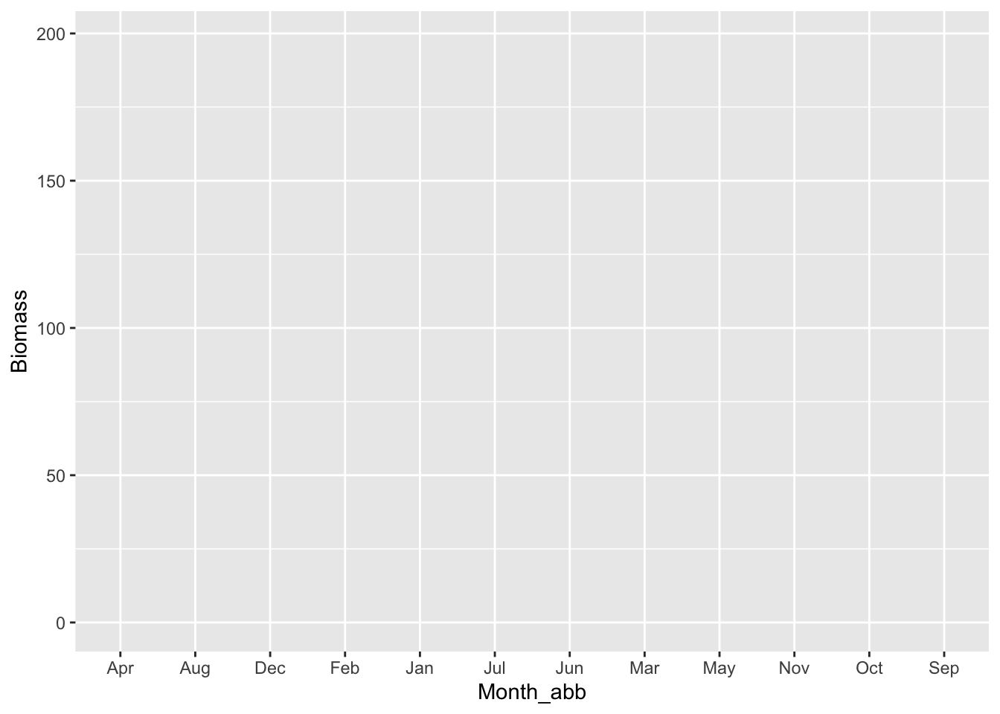
Solution
ggplot(data = df,
mapping = aes(x = Month_abb,
y = Biomass))
Warning
The month are ordered by alphabetical order, this can be changed using the code below
df_ordered <- df |>
dplyr::mutate(Month_abb = factor(Month_abb, levels = month.abb))And then run again the initiation but this time with the dataframe df_ordered
ggplot(data = df_ordered,
mapping = aes(x = Month_abb,
y = Biomass))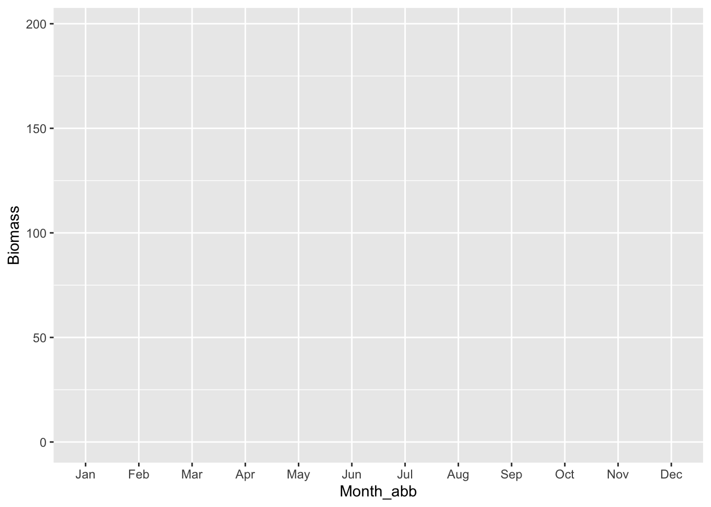
- Add the biomass data as point
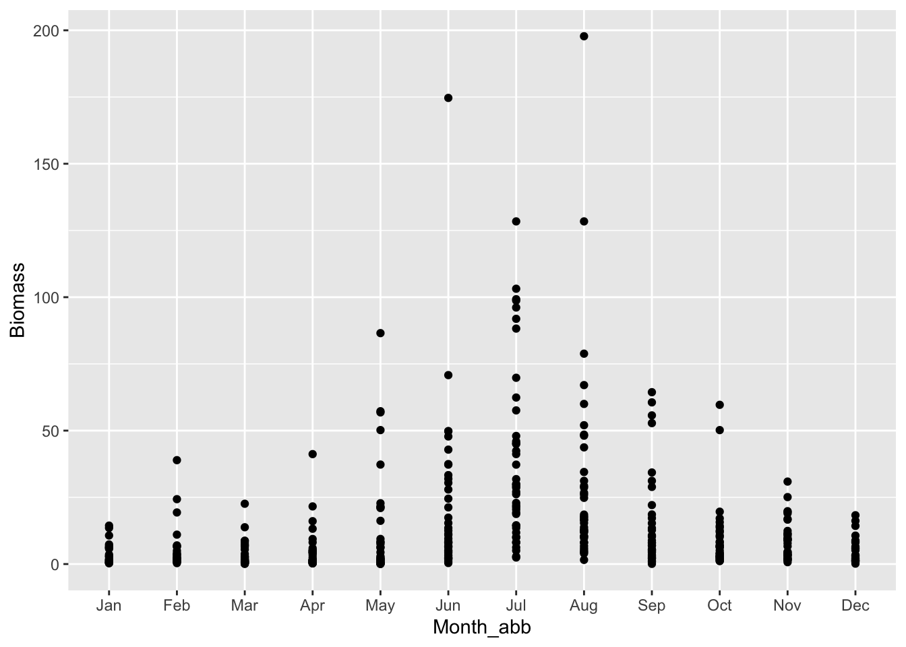
Solution
ggplot(data = df_ordered,
mapping = aes(x = Month_abb,
y = Biomass)) +
geom_point()- Separate the plot into 3 facets corresponding to the stations
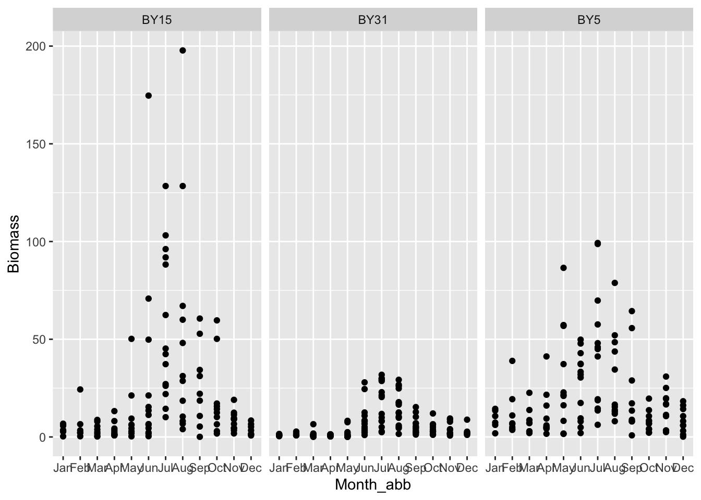
Solution
ggplot(data = df_ordered,
mapping = aes(x = Month_abb,
y = Biomass)) +
geom_point()+
facet_wrap(~Station)- Color the points by
Year
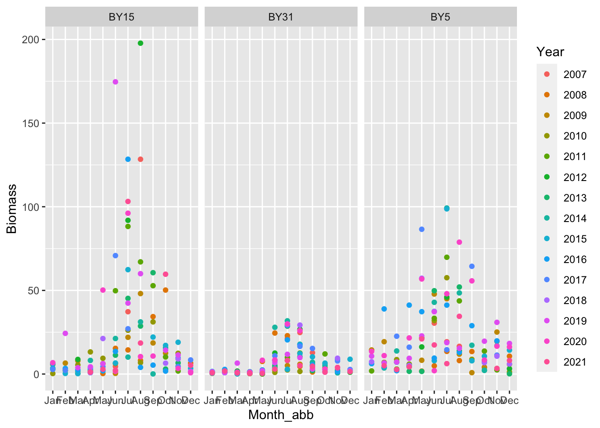
Solution
ggplot(data = df_ordered,
mapping = aes(x = Month_abb,
y = Biomass)) +
geom_point(mapping = aes(color = Year))+
facet_wrap(~Station)- Rotate by 90° the x-axis text, change the color, the size and the font face of strip text and add a background color
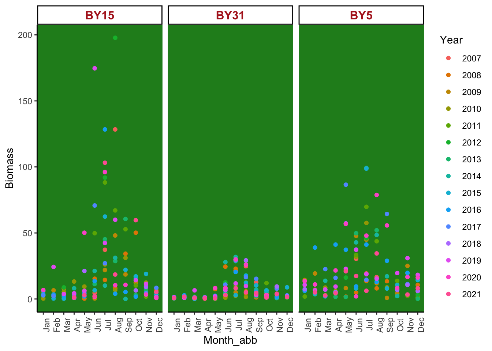
Solution
ggplot(data = df_ordered,
mapping = aes(x = Month_abb,
y = Biomass)) +
geom_point(mapping = aes(color = Year)) +
facet_wrap(~Station) +
theme_classic() +
theme(axis.text.x = element_text(angle = 90),
strip.text = element_text(color = "firebrick",
size = 12,
face = "bold"),
panel.background = element_rect(fill = "forestgreen"))- Change the x-axis name to
Monthand add a titleMy plot
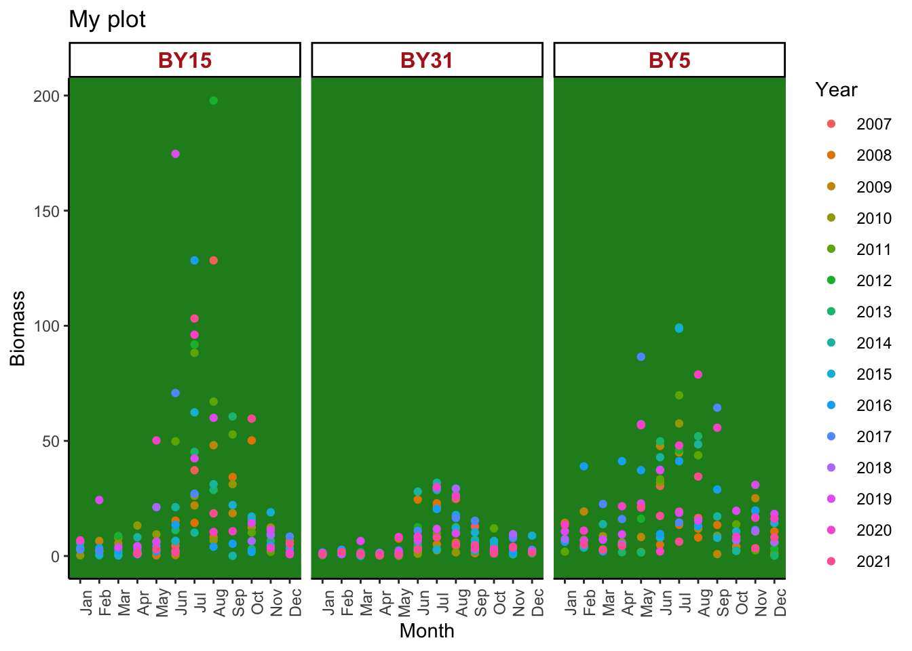
Solution
p <- ggplot(data = df_ordered,
mapping = aes(x = Month_abb,
y = Biomass)) +
geom_point(mapping = aes(color = Year)) +
facet_wrap(~Station) +
theme_classic() +
theme(axis.text.x = element_text(angle = 90),
strip.text = element_text(color = "firebrick",
size = 12,
face = "bold"),
panel.background = element_rect(fill = "forestgreen")) +
labs(x = "Month",
title = "My plot")
p- Now create a dataframe
df_summarythat contain the mean and the standard error of Centropages monthly biomass byStationbetween 2007 and 2021
#> `summarise()` has grouped output by 'Month_abb'. You can override using the
#> `.groups` argument.
Hint
Have a look at the function se from the PlanktonData package
Solution
df_summary <- df |>
group_by(Month_abb, Station) |>
summarise(Average = mean(Biomass),
SE = se(Biomass)) |>
ungroup()- Add a
geom_barshowing the average monthly biomass to the plot
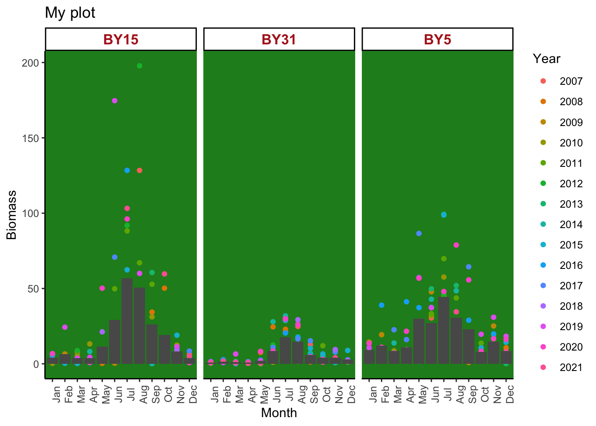
Hint
- We can use another
geom_*with anotherdatausing+ - Sometime it is also important to add the parameter
stat = "identity"in ageom_bar
Solution
p +
geom_bar(data = df_summary,
mapping = aes(x = Month_abb,
y = Average),
stat = "identity")- Add a
geom_errorbarshowing the mean ± standard error
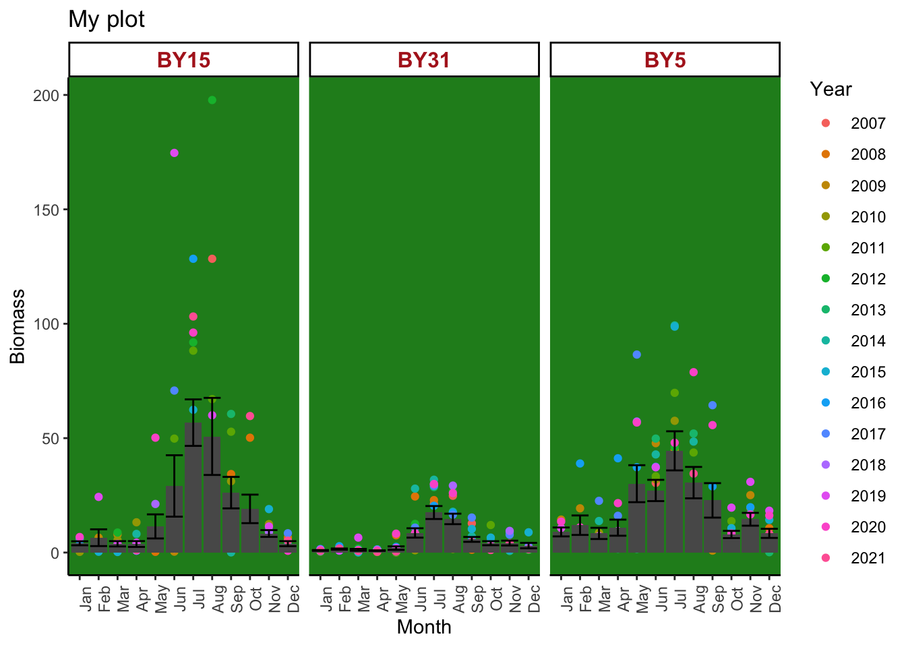
Solution
p +
geom_bar(data = df_summary,
mapping = aes(x = Month_abb,
y = Average),
stat = "identity") +
geom_errorbar(data = df_summary,
mapping = aes(x = Month_abb,
y = Average,
ymin = Average - SE,
ymax = Average + SE))- Change the
fillto of the bar to#EFF675andwidthof the errorbar to 0
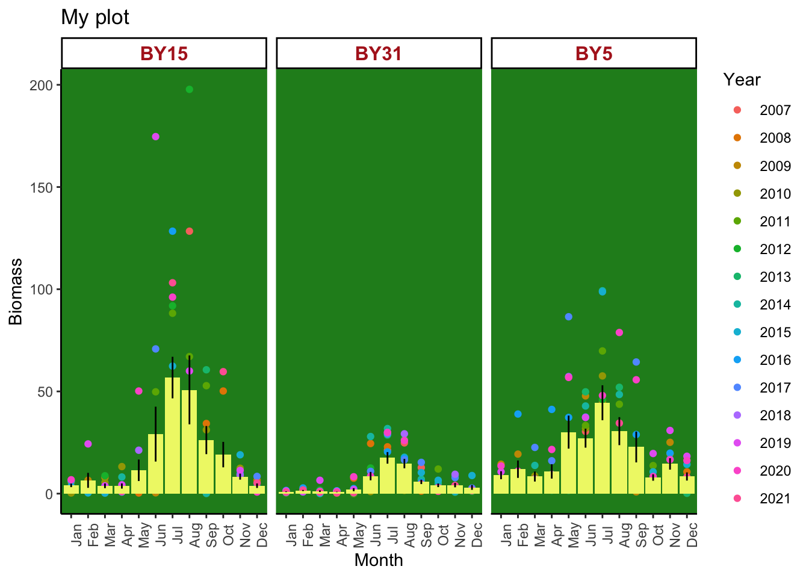
Solution
p +
geom_bar(data = df_summary,
mapping = aes(x = Month_abb,
y = Average),
stat = "identity",
fill = "#EFF675") +
geom_errorbar(data = df_summary,
mapping = aes(x = Month_abb,
y = Average,
ymin = Average - SE,
ymax = Average + SE),
width = 0)- Make these changes from the initial plot:
- Change the points to a jitter plot that is in front of the bars
- Change the shape of the jitter to the
shape21 - Change the
colorof the bars toblackandfillthem as well as thejitteraccording to theStation - Remove the
panel backgroundand change the color of thestrip texttoblack
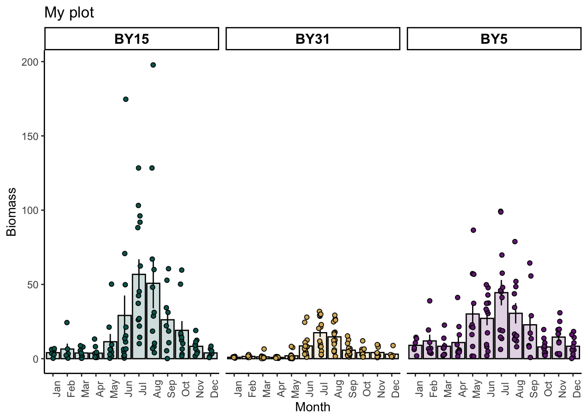
Hint
The order matters. The first geom_* will be the first pasted on the plot.
Solution
First we need to reorder the df_summary as we did with the df_ordered
df_summary <- df_summary |>
mutate(Month_abb = factor(Month_abb, levels = month.abb))And then we can plot
ggplot(data = df_ordered,
mapping = aes(x = Month_abb,
y = Biomass)) +
# First start with the bars
geom_bar(data = df_summary,
mapping = aes(x = Month_abb,
y = Average,
fill = Station),
stat = "identity",
alpha = 0.2, # <------ this is the transparency argument
col = "black") + # <------- this add the color around the bars
# Add the errorbar
geom_errorbar(data = df_summary,
mapping = aes(x = Month_abb,
y = Average,
ymin = Average - SE,
ymax = Average + SE),
width = 0) +
# Replace geom_point with geom_jitter
geom_jitter(mapping = aes(fill = Station), # <----- that is filled according to the station
shape = 21, # <---- and from the shape 21
# With geom_jitter, we can chose how much jitter we want. I suggest to set only a jitter on the x-axis and not on the y-axis
width = .1,
height = 0) +
facet_wrap(~Station) +
theme_classic() +
theme(axis.text.x = element_text(angle = 90),
strip.text = element_text(color = "black",
size = 12,
face = "bold"),
panel.background = element_rect(fill = "transparent"),
legend.position = "none") +
labs(x = "Month",
title = "My plot") +
# This is optional but you can chose the fill color like this
scale_fill_manual(values = c("#01665e","#d8b365", "#762a83"))Optional exercises
Create this plot using the data zooplankton and phytoplankton:
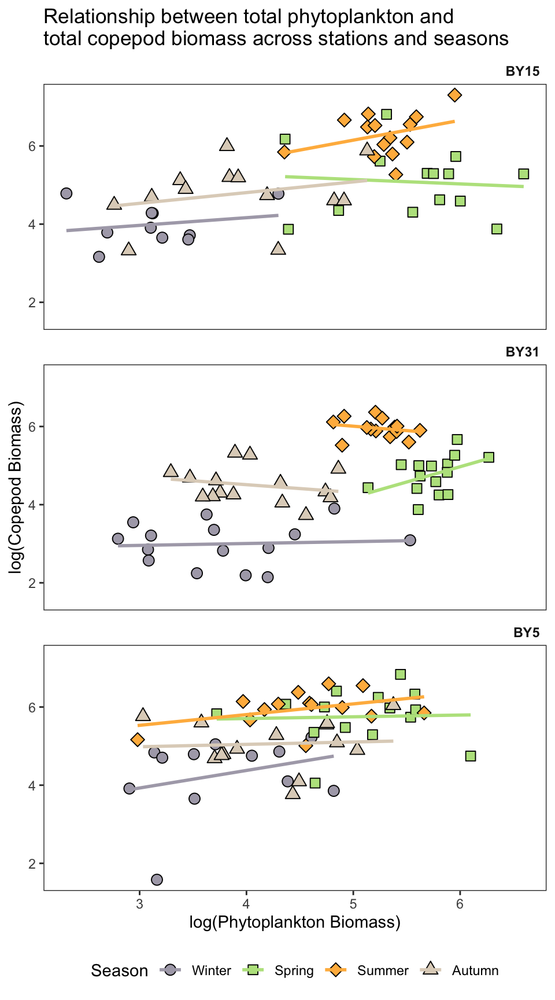
- Combine the datasets
zooplanktonandphytoplanktonto create a dataset namedplankton
Hint
?rbind()This functions requires the same number and name of columns!
Solution
data("zooplankton") ; data("phytoplankton")
plankton <-
phytoplankton |>
dplyr::mutate(Group = "Phytoplankton") |> # <---- We need to add a Group column to rbind it
rbind(zooplankton)- From the dataset
planktonkeep only the values of forCopepodaandPhytoplankton
Solution
plankton |>
dplyr::filter(Group %in% c("Phytoplankton", "Copepoda"))- Add a
Seasoncolumn containing the seasons (Winter = Jan, Feb, Mar; Spring = Apr, May, Jun; Summer = July, Aug, Sep; Autumn= Oct, Nov, Dec) - We can also specify that this is a factor that has levels
Hint
?case_when()
?month.abbWe to select a value within a vector we can also use the []. For example:
x <- c("One", "Two", "Three", "Four")
x[1]
#> [1] "One"
x[1:3]
#> [1] "One" "Two" "Three"
Solution
plankton |>
dplyr::filter(Group %in% c("Phytoplankton", "Copepoda")) |>
dplyr::mutate(Season = case_when(
Month_abb %in% month.abb[1:3] ~ "Winter",
Month_abb %in% month.abb[4:6] ~ "Spring",
Month_abb %in% month.abb[7:9] ~ "Summer",
Month_abb %in% month.abb[10:12] ~ "Autumn"),
Season = factor(Season, levels = c("Winter", "Spring", "Summer", "Autumn")))- Take the
YearlySeasonalBiomasssum byStationfor these 2 groups and transform the data by taking thelogof this biomass
Solution
plankton |>
dplyr::filter(Group %in% c("Phytoplankton", "Copepoda")) |>
dplyr::mutate(Season = case_when(
Month_abb %in% month.abb[1:3] ~ "Winter",
Month_abb %in% month.abb[4:6] ~ "Spring",
Month_abb %in% month.abb[7:9] ~ "Summer",
Month_abb %in% month.abb[10:12] ~ "Autumn"),
Season = factor(Season, levels = c("Winter", "Spring", "Summer", "Autumn"))) |>
dplyr::group_by(Season, Year, Station, Group) |>
dplyr::summarise(Tot_Biomass_log = log(sum(Biomass))) |>
dplyr::ungroup()- Make the data wide and save it as
df(and remove all the row withNAvalues)
Solution
df <-
plankton |>
dplyr::filter(Group %in% c("Phytoplankton", "Copepoda")) |>
dplyr::mutate(Season = case_when(
Month_abb %in% month.abb[1:3] ~ "Winter",
Month_abb %in% month.abb[4:6] ~ "Spring",
Month_abb %in% month.abb[7:9] ~ "Summer",
Month_abb %in% month.abb[10:12] ~ "Autumn"),
Season = factor(Season, levels = c("Winter", "Spring", "Summer", "Autumn"))) |>
dplyr::group_by(Season, Year, Station, Group) |>
dplyr::summarise(Tot_Biomass_log = log(sum(Biomass))) |>
dplyr::ungroup() |>
tidyr::pivot_wider(names_from = Group, values_from = Tot_Biomass_log) |>
tidyr::drop_na()- Start to plot by using the
geom_point- The
shapeis changing according to theSeason - The
fillis changing according to theSeason - The size of the points are fixed to
3
- The
Solution
ggplot(data = df,
mapping = aes(x = Phytoplankton,
y = Copepoda)) +
geom_point(mapping = aes(shape = Season,
fill = Season),
size = 3)- Specify that the
shapeshould be21,22,23and24
Solution
ggplot(data = df,
mapping = aes(x = Phytoplankton,
y = Copepoda)) +
geom_point(mapping = aes(shape = Season,
fill = Season),
size = 3) +
scale_shape_manual(values = c(21, 22, 23, 24))
- Split the plot vertically based on the
Season
Solution
ggplot(data = df,
mapping = aes(x = Phytoplankton,
y = Copepoda)) +
geom_point(mapping = aes(shape = Season,
fill = Season),
size = 3) +
scale_shape_manual(values = c(21, 22, 23, 24)) +
facet_wrap(~Station, ncol = 1)- Add the regression lines for each
StationandSeasonwithout the standard error
Solution
ggplot(data = df,
mapping = aes(x = Phytoplankton,
y = Copepoda)) +
geom_point(mapping = aes(shape = Season,
fill = Season),
size = 3) +
scale_shape_manual(values = c(21, 22, 23, 24)) +
facet_wrap(~Station, ncol = 1) +
geom_smooth(mapping = aes(group = Season,
col = Season),
se = FALSE,
method = "lm")- Modify the labels
Solution
ggplot(data = df,
mapping = aes(x = Phytoplankton,
y = Copepoda)) +
geom_point(mapping = aes(shape = Season,
fill = Season),
size = 3) +
scale_shape_manual(values = c(21, 22, 23, 24)) +
facet_wrap(~Station, ncol = 1) +
geom_smooth(mapping = aes(group = Season,
col = Season),
se = FALSE,
method = "lm") +
labs(x = "log(Phytoplankton Biomass)",
y = "log(Copepod Biomass)",
title = "Relationship between total phytoplankton and\ntotal copepod biomass across stations and seasons")- Modify the theme of the plot
Solution
ggplot(data = df,
mapping = aes(x = Phytoplankton,
y = Copepoda)) +
geom_point(mapping = aes(shape = Season,
fill = Season),
size = 3) +
scale_shape_manual(values = c(21, 22, 23, 24)) +
facet_wrap(~Station, ncol = 1) +
geom_smooth(mapping = aes(group = Season,
col = Season),
se = FALSE,
method = "lm") +
labs(x = "log(Phytoplankton Biomass)",
y = "log(Copepod Biomass)",
title = "Relationship between total phytoplankton and\ntotal copepod biomass across stations and seasons") +
theme_bw() +
theme(legend.position = "bottom",
strip.background = element_blank(),
strip.text = element_text(hjust = 1,
face = "bold"),
panel.grid = element_blank()) +
scale_color_manual(values = c("#ADA9B7", "#B9E28C", "#FFB84C", "#DFD3C3")) +
scale_fill_manual(values = c("#ADA9B7", "#B9E28C", "#FFB84C", "#DFD3C3"))Create this plot using the two datasets
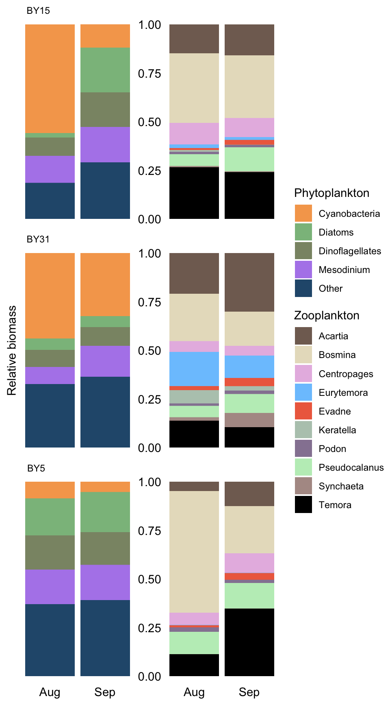
- Start with loading the
phytoplanktondataset
Solution
data("phytoplankton")- Filter the Month
AugandSep
Solution
phytoplankton |>
dplyr::filter(Month_abb %in% c("Aug", "Sep"))- Initiate a plot with the
Month_abbon the x-axis, theBiomasson the y-axis and that is filled according to theirTaxa
Solution
phytoplankton |>
dplyr::filter(Month_abb %in% c("Aug", "Sep")) |>
ggplot(mapping = aes(x = Month_abb,
y = Biomass,
fill = Taxa))
Tip
You can pipe directly your dataset into ggplot. It will know that data = what_is_above
- Add a
geom_bar
Hint
Look what position we can apply to geom_bar
Solution
phytoplankton |>
dplyr::filter(Month_abb %in% c("Aug", "Sep")) |>
ggplot(mapping = aes(x = Month_abb,
y = Biomass,
fill = Taxa)) +
geom_bar(position = "fill",
stat = "identity")- Separate the plot in facets by
Station
Solution
phytoplankton |>
dplyr::filter(Month_abb %in% c("Aug", "Sep")) |>
ggplot(mapping = aes(x = Month_abb,
y = Biomass,
fill = Taxa)) +
geom_bar(position = "fill",
stat = "identity") +
facet_wrap(~Station, ncol = 1) - Modify the labels, fill values, theme and the y-axis and save the plot as
p1
Solution
p1 <-
phytoplankton |>
dplyr::filter(Month_abb %in% c("Aug", "Sep")) |>
ggplot(mapping = aes(x = Month_abb,
y = Biomass,
fill = Taxa)) +
geom_bar(position = "fill",
stat = "identity") +
facet_wrap(~Station, ncol = 1) +
scale_fill_manual("Phytoplankton", # This change the title of the legend
values = c("#F5A65B", "#8BBD8B", "#8B9474", "#B388EB", "#28587B"))+
theme_void() +
theme(axis.text.x = element_text(color = "black"),
strip.text = element_text(color = "black", hjust = .1),
axis.title.y = element_text(color = "black", angle = 90)) +
labs(y = "Relative biomass")- Do the same for the
zooplankton
Solution
p2 <-
zooplankton |>
dplyr::filter(Month_abb %in% c("Aug", "Sep")) |>
ggplot(mapping = aes(x = Month_abb,
y = Biomass,
fill = Taxa)) +
geom_bar(position = "fill",
stat = "identity") +
facet_wrap(~Station, ncol = 1) +
scale_fill_manual("Zooplankton",
values = c("#816C61", "#E7DFC6", "#E7BBE3", "#7CC6FE", "#EE6C4D", "#B6C9BB", "#9684A1", "#BFEDC1", "#B19994", "black")) +
theme_void() +
theme(axis.text = element_text(color ="black"),
strip.text = element_text(color = "transparent"))- Combine the two plots together using the package
patchwork
Solution
library(patchwork)
p1 + p2 +
plot_layout(guides = "collect") # This collect the legend togetherUsing phytoplanktoncreate this plot:
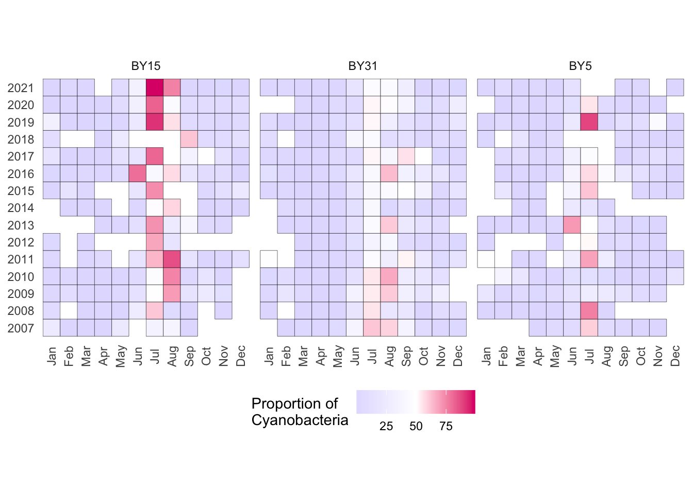
This is one solution, but several other exist !
- Rename the taxa either
CyanobacteriaorOtherand transformMonth_abbas a factor
Solution
phytoplankton |>
dplyr::mutate(Taxa = ifelse(Taxa == "Cyanobacteria", "Cyanobacteria", "Other"),
Month = factor(Month_abb, levels = month.abb))
- Calculate the sum of
BiomassbyMonth,Taxa,StationandYear
Solution
phytoplankton |>
dplyr::mutate(Taxa = ifelse(Taxa == "Cyanobacteria", "Cyanobacteria", "Other"),
Month = factor(Month_abb, levels = month.abb)) |>
dplyr::group_by(Taxa, Station, Month, Year) |>
dplyr::summarise(Tot_biomass = sum(Biomass)) |>
dplyr::ungroup()- Pivot the table and remove the
NAand calculate the proportion ofCyanobacteria
Solution
phytoplankton |>
dplyr::mutate(Taxa = ifelse(Taxa == "Cyanobacteria", "Cyanobacteria", "Other"),
Month = factor(Month_abb, levels = month.abb)) |>
dplyr::group_by(Taxa, Station, Month, Year) |>
dplyr::summarise(Tot_biomass = sum(Biomass)) |>
dplyr::ungroup() |>
tidyr::pivot_wider(names_from = Taxa, values_from = Tot_biomass) |>
tidyr::drop_na() |>
dplyr::mutate(Total = Cyanobacteria + Other,
Cyano_prop = (Cyanobacteria/Total) * 100) |>
dplyr::select(Station, Month, Year, Cyano_prop) # This is not needed but it is easier to have a simpler table- Initiate the plot using
geom_tileand separate according to theStation
Solution
phytoplankton |>
dplyr::mutate(Taxa = ifelse(Taxa == "Cyanobacteria", "Cyanobacteria", "Other"),
Month = factor(Month_abb, levels = month.abb)) |>
dplyr::group_by(Taxa, Station, Month, Year) |>
dplyr::summarise(Tot_biomass = sum(Biomass)) |>
dplyr::ungroup() |>
tidyr::pivot_wider(names_from = Taxa, values_from = Tot_biomass) |>
tidyr::drop_na() |>
dplyr::mutate(Total = Cyanobacteria + Other,
Cyano_prop = (Cyanobacteria/Total) * 100) |>
dplyr::select(Station, Month, Year, Cyano_prop) |> # This is not needed but it is easier to have a simpler table
ggplot(mapping = aes(x = Month,
y = Year,
fill = Cyano_prop)) +
geom_tile(col = "black") +
facet_grid(~Station)- Implement some
themechanges
Solution
phytoplankton |>
dplyr::mutate(Taxa = ifelse(Taxa == "Cyanobacteria", "Cyanobacteria", "Other"),
Month = factor(Month_abb, levels = month.abb)) |>
dplyr::group_by(Taxa, Station, Month, Year) |>
dplyr::summarise(Tot_biomass = sum(Biomass)) |>
dplyr::ungroup() |>
tidyr::pivot_wider(names_from = Taxa, values_from = Tot_biomass) |>
tidyr::drop_na() |>
dplyr::mutate(Total = Cyanobacteria + Other,
Cyano_prop = (Cyanobacteria/Total) * 100) |>
dplyr::select(Station, Month, Year, Cyano_prop) |>
ggplot(mapping = aes(x = Month,
y = Year,
fill = Cyano_prop)) +
geom_tile(col = "black") +
facet_grid(~Station) +
coord_fixed() +
labs(x = NULL, y = NULL)+
theme_minimal() +
theme(legend.position = "bottom",
axis.text.x = element_text(angle = 90, vjust=0.5),
panel.grid = element_blank()) +
scale_fill_gradient2("Proportion of\nCyanobacteria", low = "#E3DFFF", high = "#DC0073", midpoint = 50)